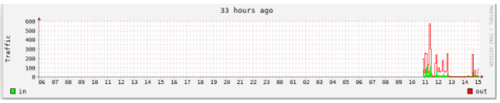

Linux: RRDtool简体中文教程
- TAGS: Linux
RRDtool简体中文教程
1. RRDtool 简介
之前，让我们先回顾一下它的前身：MRTG。相信只要做网管工作的朋友，对 MRTG这个软件一定不会陌生， 至少也可能听过。MRTG 可以通过 SNMP 协议直接 访问SNMP Object ，例如 ifInOctect 和 ifOutOctect ；也可以通过外部 script的方式，来监测cpu、内存、磁盘利用率、数据库的表空间利用率等信息。 只要把MRTG 放入 crontab 中让其自动运行， MRTG就可以自动为你绘制出每天、 每周、每月、每年的统计图表。 MRTG甚至还为你提供了自动生成配置文件的 cfgmaker 和 自动生成 HTML 页面的indexmaker 这两个工具，让你省去逐个编 写 cfg文件的痛苦。到目前为止，还有很多人在使用它。它现在 有 Unix、 Windows各种平台，windows 平台上甚至出现了 PRTG 这样和 MRTG很象的东东， 轻点鼠标就可以漂亮的完成工作。 既然如此，我们为什么还要介绍RRDtool 呢？ 先让我们看几个问题，几个在 MRTG 使用中常见的问题 ：
一）MRTG 不能作什么？
MRTG 一张图表只能显示2个对象，一个输入，一个输出。如果你想同时
显示多个对象呢？例如笔者的单位有12台服务器。如果想把它们的负载情况都显 示在一个图表上，MRTG至少需要6张图。
MRTG无法回放数据。MRTG 的图是自动生成的，所采用的数据也是由 MRTG
自己提取的，例如5分钟平均的记录有288条， MRTG每20分钟合并一次，每次合并4个记录。在50个小时后，288条记录将全部变成20分钟平均的数据。如果你想回放这些数据怎么办呢？对不起，只能去看第2个图了（每周）。
MRTG 只有 COUNTER 和 GAUGE 这两种计算类新。如果我要监测两个数值型 的对象之间的大小，它们之间的差值可以是正数，也可以是负数。MRTG能实现 吗？笔者在多次试验中发现，MRTG 对于负数的和 '.15'这样格式的小数（通 常都是bc的输出）的识别会出错。例如把 '.72' 识别为 72，把 -1 识别为 1。
- =MRTG 无法实现有条件的绘图。=有时候我们只想看某个服务器在一年之中的 宕机时间，正常时间我们不关心；或者我们想看当前值和去年同期相比究竟如 何？这些都是MRTG无法做到的
二） MRTG 的优点
那 MRTG 和 RRDtool相比就没有优点了吗？也不是。简单、方便就是它的最大优 点。
（MRTG 中还有一个好东西就是自动告警功能，相比之下，RRDtool在这方面的配 置比较复杂，还不如直接作到 shell script中）
前面提到 MRTG 能够通过 cfgmaker 和 indexmaker快速建立配置文件和HTML页 面。而 RRDtool 在这两方面都需要自己动手。
数据的采集→插入数据→提取数据→绘图→建立 HTML，这些步骤都是需要你自 己动手的。RRDtool给了使用它的人最大程度的自由。但这种自由对于新手或者 没有耐心的人来说可能是一种考验。相比之下，MRTG就容易上手多了。
三） RRDtool 的定义
RRDtool 代表 "Round Robin Database tool" ，作者同时也是 MRTG软件的发明 人。官方站点位于http://oss.oetiker.ch/rrdtool/ 。
所谓的“Round Robin”其实是一种存储数据的方式，使用固定大小的空间来存 储数据，并有一个指针指向最新的数据的位置。我们可以把用于存储数据的数据 库的空间看成一个圆，上面有很多刻度。这些刻度所在的位置就代表用于存储数 据的地方。所谓指针，可以认为是从圆心指向这些刻度的一条直线。指针会随着 数据的读写操作自动移动。要注意的是，这个圆没有起点和终点，所以指针可以 一直移动，而不用担心到达终点后就无法前进的问题。在一段时间后，当所有的 空间都存满了数据，就又从头开始存放。这样整个存储空间的大小就是一个固定 的数值。所以RRDtool就是使用类似的方式来存放数据的工具，RRDtool 所使用 的数据库文件的后缀名是'.rrd'。
四）RRDtool 的特殊之处
- 首先 RRDtool 存储数据，扮演了一个后台工具的角色。但同时 RRDtool 又允 许创建图表，这使得 RRDtoo看起来又像是前端工具。其他的数据库只能存储 数据，不能创建图表。
- RDtool 的每个 rrd 文件的大小是固定的，而普通的数据库文件的大小是随着 时间而增加的
- 其他数据库只是被动的接受数据， RRDtool 可以对收到的数据进行计算，例如 前后两个数据的变化程度（rate of change），并存储该结果。
- RRDtool 要求定时获取数据，其他数据库则没有该要求。如果在一个时间间隔 内（heartbeat）没有收到值，则会用UNKN 代替，其他数据库则不会这样做
五）总结RRDtool 和 MRTG 的不同之处
- MRTG 是采用配置文件的方式来监控的； RRDtool 则没有配置文件一说。所有 操作都是通过命令（也可以写成script方式）执行
- MRTG 有自动采集数据的功能（通过 snmp）； RRDtool 没有，需要手工或者 通过 shell/perl 脚本来获取数据
- MRTG 每次运行都会更新图片和日志； RRDtool 默认只是接收数据，并不会绘 图，除非手工执行 graph 命令
- MRTG 采用明文的 log 方式存放历史数据； RRDtool 采用数据库的方式来存 放数据；
MRTG 无法回放日志数据，因为 MRTG 会对日志进行合并；
RRDtool 采用 RRA 的概念，把不同统计周期的数据单独存放，所以可以做到历史数据的回放功能MRTG 的 log 中每种周期的记录的数量是自动维护的；
RRDtool 的 RRA 中的记录数是可以自定义的。MRTG 中数据的统计时间间隔是固定的，例如5分钟平均，30分钟平均，2小时 平均，1天平均；
RRDtool 可以任意设置（试过1分钟一次）- MRTG 一张图只能显示2个对象；
RRDtool 可以显示多个。 MRTG 的数据类型只有 COUNTER 和 GAUGE 两种；
RRDtool 有5种，COUNTER、GAUGE、DERIVE、ABSOLUTE、COMPUTEMRTG 的图表只能显示当前值、最大值、平均值；
RRDtool 可以显示当前值（LAST）、初值（FIRST）、最大值(MAX)、最小值 （MIN）、平均值（AVG）、总和（TOTAL）等MRTG 绘图方式只有 AREA、LINE 方式；
RRDtool 则有 AREA、LINE（1|2|3）、STACK 方式；MRTG 负责搜集、存储、绘图、建档（HTML）；
RRDtool 只负责存储、绘图这两个阶段，所以需要自己建立 HTML 文件MRTG 的运算功能较差；
RRDtool 可以通过 CDEF 对取出来的数据进行算术和逻辑运算；MRTG 只能原原本本的显示数据；
RRDtool 可以对数据进行处理，或者有条件的显示；
看来 RRDtool 的功能是不是比 MRTG 强很多呢？！
具体的差异目前就只能想到这些，不知各位还有没有什么补充呢？ ！！^_^ ！！
相信这么讲的话还是比较抽象的，不过不用急，目前只是一个开始而已。
下一节我们开始讲如何安装 RRDtool 。
2. rrdtool安装
安装，我直接用的apt-get install rrdtool即可安装成功
3. 前期规划
可能大家会觉得奇怪，做个 RRDtool还要规划什么？俗话说：磨刀不误砍柴工。 好的规划必须具备灵活性、可扩展性，否则会给将来的使用带来不少的麻烦。我 们先谈一下 MRTG 的规划，再谈 RRDtool的规划。
一）MRTG 的前期规划
想要监测监测什么对象？并列出一个清单；想要以什么方法来取得数据？是通过 SNMP 还是 shell 、perl 。 如果使 用SNMP ，监测对象所在主机的 SNMP 服务安装了吗？是否配置完毕；每个对象的监测时间是多长时间一次？并以此对监测对象进行分类。例如笔者本人共用 MRTG 监测了 80 多个对象，并根据内容分成四类 ：
- 重要状态方面 ： 例如 HACMP 的切换动作监控；Oracle 服务的状态；LVM 中的 vg 是否在线；服务器是否宕机等。这些监测对象对于一个系统的运行 来说都是十分重要的，一旦发生故障，需要立即处理的。所以对于这类对象， 按最小时间间隔（5分钟一次）设置
- I/O性能方面 ：主要是 I/O 吞吐量、I/O 服务时间方面的监测。这类对象是7分钟一次
- 次要状态方面 ：例如 cpu 利用率、内存利用率、在线人数、温度、拨号用 户人数等。20分钟一次
- 利用率方面 ：由于实际应用的问题，所以对利用率比较关心。单独拎出来 做一块监测。主要是监控Oracle的各个表空间的利率，以及LVM磁盘系统各 个分区的利用率。每25分钟一次
- 监控机本身：负责监控的监控机本身也需要监控。主要监控当前监测的对象 数量，以及系统负荷。这类就30分钟一次。
每个对象一个 cfg 文件？还是全部集中在一个 cfg 文件中呢？我本人还是比较倾向于每个Target一个 cfg 文件，每个 cfg 中都定 义 Workdir、Language这两个选项。针对上面的5个分类，建立5个 "大的"cfg 文 件，再利用 MRTG 中的Include 功能导入一个个"小的"、具体的 cfg 文件。 这样当日后对某个监测对象进行修改时（例如修改数据的获取脚本，或者修改 图片的外观），可以单独测试 该对象。不用连同其他对象也一起跑一次，节 省不少时间。如果想取消那个对象的监测，在前面提到的那个“大的”cfg 文 件中，把对应 的 Include 语句注释掉就可以了，是不是更方便呢？
为个监控对象起一个合适的名称。一般用的方式。这一步也满重要的。一 开始不注意，随便给个名字，等到后来自己都搞不清楚了，建议一开始就规划 好。如果要使用 MRTG的告警功能，就更应该好好规划了，要不然收到告警邮 件都不知道是那个对象，那个机器出现问题，白白浪费时间。是否需要用到 MRTG 的告警功能。MRTG有告警功能，可以设置输入/出的最 大值，最小值。超过限制就会调用 ThreshProgI 和 ThreshProgO 选项指定的 程序。我一般用发送邮件和HTML配合的方式。
差不多也就这些了，就可以开始动手写 script 了。
二）RRDtool 的前期规划
RRDtool 的前期规划相对多一点，因为 RRDtool很多东西需要自己设定。除了上 述 MRTG 考虑的几点之外，我一般还考虑以下几点：
是一个 RRD 文件中包括多个监测对象（DS），还是分成多个 RRD 文件？
RRDtool 提供了 tune 操作，可以增加监测对象或者删除 RRD 文件中的某个 对象，而且绘图时也可以指定要画的是那个对象，这点看个人喜欢而定。
- 如何统计取得的数据 ：MRTG是固定的，5分钟、20分钟、2小时、1天。 RRDtool 则可以自己设置
如何保存/统计这些数据 ：这是和 MRTG 不同的地方。MRTG log的建立和维护 是自动的，RRDtool 的数据存放 则需要自己定义。但我们可以参照MRTG 的方 式：
每日统计图（5分钟平均） ： 600 个，大约2天的时间 每周统计图（20分钟平均） ： 600 个，大约8天的时间 每月统计图 （2小时平均） ： 600 个，50 天的时间 每年统计图 （1天平均） ：730 个， 2年的时间
要以什么方式绘图 ：MRTG绘图方式只有曲线（LINE）和方块（AREA）两种；
RRDtool除了这两种外，还有一种是 STACK 方式。就是在前一个曲线或者方块 的基础上绘图图，而不是直接从 X轴开始绘图。这样绘制出来的图比较清晰， 不会出现交叉的现象，但此时 Y轴的值等于当前对象的值加上前一个绘图对象 的值。例如前一个对象（cpu的系统进程利用率）的值是10，采用的是 AREA 方式绘图。当前对象（cpu的用户级进程的利用率）是5，采用的是 STACK 方 式，则“cpu的用户级进程利用率”对应的Y轴刻度是10+5=15；所以如果不加 说明，别人可能会误解。
三）实际例子
- 搞清楚究竟想要监测什么对象 ：监测本地主机的网络流量。包括 eth0 和 lo 接口的流量。
想要以什么方法来取得数据 ：sar 也可以统计网卡接口的流量。但这里我们 用 SNMP ，访问 ifInOctets 和 ifOutOctets 。
假设脚本名称是 get_eth0_traffic.sh 和 get_lo_traffic.sh
- 每个对象的监测时间是多长时间一次 ：5分钟
- 是采用一个 RRD 文件还是多个 ：2个 RRD 文件，一个是 eth0.rrd，一个是 lo.rrd
- [color=bl;ue]为每个监测对象起名 ：分别是 eth0_in ,eth0_out ,lo_in, lo_out
- 统计频率 ：5分钟、20分钟、2小时、1天
- 如何保存统计数据 ：600个、600个、600个、730个
- 要以什么方式绘图 ：目前暂不考虑该问题。等到实际绘图时再体验。
注 ：实际上我们可以把数据的插入、绘图一起做到 get_eth0_traffic.sh 和 get_lo_traffic.sh 中，但目前这两个脚本只是负责取数据并输出而已，到最后 我们再把这些功能合并到一起。
四）下面是脚本的内容
# 安装net-snmp wget -O /etc/yum.repos.d/epel.repo http://mirrors.aliyun.com/repo/epel-7.repo yum install net-snmp -y cd /etc/snmp/ cp snmpd.conf snmpd.conf.bak cat snmpd.conf.bak |grep -vE '^$|^#' > snmpd.conf cat >/etc/snmp/snmpd.conf<<\EOF com2sec notConfigUser default public group notConfigGroup v1 notConfigUser group notConfigGroup v2c notConfigUser view all included .1 view systemview included .1.3.6.1.2.1.1 view systemview included .1.3.6.1.2.1.25.1.1 access notConfigGroup "" any noauth exact all none none access notConfigGroup "" any noauth exact systemview none none syslocation Unknown (edit /etc/snmp/snmpd.conf) syscontact Root <root@localhost> (configure /etc/snmp/snmp.local.conf) dontLogTCPWrappersConnects yes EOF systemctl start snmpd systemctl enable snmpd yum -y install net-snmp-utils 参考： https://www.cnblogs.com/createyuan/p/3997228.html ubuntu安装： sudo apt-get install librrd-dev libpython3-dev # yum install rrdtool-devel python34-devel pip install rrdtool
cat >get_eth0_traffic.sh<<\EOF #!/bin/bash # 首先取得 eth0 接口的 ifIndex index=$(snmpwalk -IR -v 1 -c public localhost RFC1213-MIB::ifDescr |grep eth0|cut -d '=' -f 1|cut -d '.' -f 2) # 再通过 snmp 协议取得 ififInOctets 和 ifOutOctets 的值 # 由于在 /etc/snmp.conf 中配置了 defVersion 和 defCommunity ，所以 snmpget 命令不用指定这两个参数 eth0_in=$(snmpget -v 1 -c public -IR -Os localhost ifInOctets.${index}|cut -d ':' -f 2|tr -d '[:blank:]') eth0_out=$(snmpget -v 1 -c public -IR -Os localhost ifOutOctets.${index}|cut -d ':' -f 2 |tr -d '[:blank:]') echo $eth0_in echo $eth0_out EOF
cat >get_lo_traffic.sh<<\EOF #!/bin/bash # 首先取得 eth0 接口的 ifIndex index=$(snmpwalk -v 1 -c public -IR localhost RFC1213-MIB::ifDescr |grep lo|cut -d '=' -f 1|cut -d '.' -f 2) lo_in=$(snmpget -v 1 -c public -IR -Os localhost ifInOctets.${index}|cut -d ':' -f 2|tr -d '[:blank:]') lo_out=$(snmpget -v 1 -c public -IR -Os localhost ifOutOctets.${index}|cut -d ':' -f 2 |tr -d '[:blank:]') echo $lo_in echo $lo_out EOF
再把这2个脚本放入 crontab 中，每5分钟执行一次
*/5 * * * * /bin/bash /home/sh/get_eth0_traffic.sh */5 * * * * /bin/bash /home/sh/get_lo_traffic.sh
不过这样会有讨厌的邮件产生，也可以在脚本中用 while true 循环，配合 sleep 300 让脚本一直运行，而不是重复启动脚本。具体选择那样你自己决定。
当所有的准备工作都完成后，就可以开始考虑建库了。
4. 建立 RRD 数据库
准备工作都做完了，脚本也写完了，就可以开始建库了。建库实际上就是建立后缀名为 .rrd 的 RRD 文件。
4.1 语法格式
rrdtool create filename [--start|-b start time] [--step|-s step]
[DS:ds-name:DST:dst arguments]
[RRA:CF:cf arguments]
其中 filename 、DS 部分和 RRA 部分是必须的。其他两个参数可免。
我们用一个官方例子对整个语法进行解释（以下都用这个例子说明参数的使用）：
rrdtool create target.rrd --start 1023654125 --step 300 DS:mem:GAUGE:600:0:671744 RRA:AVERAGE:0.5:12:24 RRA:AVERAGE:0.5:288:31
4.2 参数解释
<filename>： 默认是以 .rrd 结尾，但也以随你设定。- –step ： 集数据的间隔时间，默认是5分钟。习惯上我们会设 300(秒)，当 然你可以自行调整，这也是RRD的优势所在。但是采集周期不应该过短 也不应 小于你的update rrd文件周期，否则可能会造成服务器负载过重。 和 MRTG 的 interval同样含义。默认是5分钟。我们的脚本也应该是每5分钟运行一 次。
–start ： 这个参数可以指定 filename 的数据记录起始日期，你可以指定 为 1970 年至今的秒数（参数为-b
date -d "1970/01/01" +%s），如果你 不指定，那么起始时间默认就是现在。 RRDtool 不会接受任何采样时间小于 或者等于指定时间的数据。也就是说 —start指定了数据库最早的那个记录 是从什么时候开始的。 如果 update 操作中给出的时间在 —start 之前， 则 RRDtool拒绝接受。 –satrt 选项也是可选的。按照 我们在前一篇中的设 定，则默认是当前时间减去 600*300秒，也就是50个小时前。 如果你想指 定–start 为1天前，可以用--start $(date -d '1 days aog' +%s)
注意，–start 选项的值必须是 timestamp 的格式。
4.3 DS:ds-name:DST:dst arguments
DS:ds-name:{GAUGE | COUNTER | DERIVE | DCOUNTER | DDERIVE | ABSOLUTE}:heartbeat:min:max
DS:ds-name:COMPUTE:rpn-expression
4.3.1 DS ：DS 用于定义 Data Soure 。也可以理解为声明数据变量的关键字。
4.3.2 DS-NAME：变量名，可以理解为你给这个数据源起的助记符(变量名)（简称DSN）。
- 当每一个刷新周期到来的时候，数据文档中各变量对应的值就会被更新。这 个变量对应的值在官方文档中也叫做主要数据点――PDP（Primary Data Point）。
- DSN 从 1-19 个字符，必须是 0-9,a-z,A-Z 。像我们前面提到的 eth0_in ,eth0_out, lo_in , lo_out 。
4.3.3 DST：DS数据源的类型，有 COUNTER、GUAGE、DERIVE、ABSOLUTE、COMPUTE 5种。官方介绍了7 种
- GAUGE：我们用的最多的就是GAUGE了，它的中文解释是：测量。在这里它表 示实际的值。比如说输入次序为98 100 98，那么输出顺序也是98 100 98。
- COUNTER：累计值，必须是递增的,除非是计数器溢出(overflows)。在这种情 况下,RRDtool会自动修改收到的值。例如网络接口流量、收到的packets数量 都属于这一类型。自己进行计算，比如说输入次序为98 100 98，那么输出顺 序也是2 -2，怎么出来的这两个数值呢？100-98 98-100，其实就是两个差值， 它表示的是经过一个刷新周期的变化率。
- DERIVE：和 COUNTER类似。但可以是递增,也可以递减,或者一会增加一会儿 减少。
- ABSOLUTE：它每次都假定前一个interval的值是0,再计算平均值。 COUNTER/DERIVE/AVSOLVTE虽然都是取差值,但会再除以两次间隔间的秒数。 例,两次间隔间为300秒,那画出来的就是2/300,-2/300 的值
- COMPUTE : COMPUTE比较特殊,它并不接受输入,它的定义是一个表达式,能够 引用其他DS并自动计算出某个值。例如：
DS:eth0_bytes:COUNTER:600:0:U DS:eth0_bits:COMPUTE:bytes,8,*
则 eth0_bytes 每得到一个值，eth0_bits 会自动计算出它的值：将 eth0_bytes的值乘以 8 。不过 COMPUTE 型的 DS 有个限制，只能应用
再给出一个例子帮助大家理解： Values = 300, 600, 900, 1200 # 实际值输入值（每隔300S输入一个） Step = 300 seconds # 刷新周期 COUNTER DS = 1, 1, 1, 1 # COUNTER定义的DS的值。(300-0)/300，(600-300)/300，(900-600)/300，(1200-900)/300 ，所以结果为 1，1，1，1 DERIVE DS = 1, 1, 1, 1 # DERIVE定义的DS的值。同上 ABSOLUTE DS = 1, 2, 3, 4 # ABSOLUTE定义的DS的值。(300-0)/300,(600-0)/300 , (900-0)/300, (1200-0)/300，所以结果为 1，2，3，4 GAUGE DS = 300, 600, 900, 1200 # GAUGE定义的DS的值。300 , 600 ,900 ,1200 不做运算，直接存入数据库
所以第一行的 values 并不是 PDP ，后面4行才是 PDP
概念：PDP Primary Data Point 。正常情况下每个 interval RRDtool都会收到 一个值；RRDtool 在收到脚本给来的值后 会计算出另外一个值（例如平均值）， 这个 值就是 PDP；这个值代表的一般是“xxx/秒”的含义。注意，该值不一定 等于RRDtool收到的那个值。除非是GAUGE ，可以看下面的例子就知道了
4.3.4. heartbeat 心跳有效期
rrdtool create target.rrd --start 1023654125 --step 300 DS:mem:GAUGE:600:0:671744 RRA:AVERAGE:0.5:12:24 RRA:AVERAGE:0.5:288:31
date -d@1023654125 +"%F %T" 2002-06-10 04:22:05
比如在例子中，我们定义了心跳有效时间是600秒，也就是两个刷新周期。举个 例子，在12点的时候没有产生数据，那么前后300S（共600S）的平均值就会绘成 12点的值，但如果在两个刷新周期内，都没有接收到数据更新，那么这个时候， 必须往数据文档中写入一个（UN）UNKNOWN值。这是RRDTool的一个特别的地方。 要知道MRTG在处理网络中断的时候，记录的是0值。这个0和UN还是有一定区别的。
4.3.5 min:max 记录数据的最小值和最大值
DS数值的有效范围，超出就是UN喽。也可以写成 U:U 代表不限范围。小技巧： 将数据源建立方式记为 "三文字,三数字"
DS:ds-name:DST:heartbeat:min:max
案例：DS:mysql:COUNTER:600:0:100000000
* DS(Data Source，数据源)表达式总共有六个栏位：
* DS 表示这个为DS表达式
* ds-name 数据域命名
* DST 定义数据源的类型
* heartbeat 有效期(heartbeat)，案例里的值为'600'，假设要取12:00的数据，而前后300秒里的值(11:55-12:05)经过平均或是取最大或最小都算是12:00的有效值；
* min 允许存放的最小值，此例允许最小为0。
* max 允许存放的最大值，最大为100000000。
rrdtool create Flow.rrd \ --start $(date -d "1 year ago" +%s) \ --step 300 \ DS:eth0_in:GAUGE:600:0:5000 \ DS:eth0_out:GAUGE:600:0:5000 \ RRA:AVERAGE:0.5:1:600 \ RRA:AVERAGE:0.5:6:700 \ RRA:AVERAGE:0.5:24:775 \ RRA:AVERAGE:0.5:288:797 \ RRA:MAX:0.5:1:600 \ RRA:MAX:0.5:6:700 \ RRA:MAX:0.5:24:775 \ RRA:MAX:0.5:444:797 \ RRA:MIN:0.5:1:600 \ RRA:MIN:0.5:6:700 \ RRA:MIN:0.5:24:775 \ RRA:MIN:0.5:444:797
4.4 RRA:CF:cf arguments
RRA：用于指定数据如何存放。我们可以把一个RRA 看成一个表，各保存不同 interval 的统计结果。 RRA 即 Round Robin Archive，Archive是什么，存档。 比如我们每5分钟产生一条刷新的数据，那么一个小时就是12条。每天就是288条。 这么庞大的数据量，一定不可能都存下来。肯定有一个合并（consolidate）数 据的方式，那么这个就是RRA的作用了。下面具体介绍怎么应用RRA：
RRA:{AVERAGE | MIN | MAX | LAST}:xff:steps:rows
4.4.1 RRA：用以声明RRAs的关键字
4.4.2 CF：consolidation function 合并方式，包含四类：
AVERAGE, MIN,MAX, LAST //平均值，最大值，最小值，最后一笔
概念：CDP上面说过了，经过一个刷新周期，会获得一个主数据点（PDP），将若 干个PDPs使用合并方式（CF）合并后会产生一个合并数据点CDP（consolidated data point）。这个值就是存入 RRA 的数据，绘图时使用的也是这些数据
4.4.3 xff：xfiles factor 和unkown数据有关，很多资料都取0.5
细心的朋友可能会发现，在 RRA 的定义中有一个数值，固定是 0.5，这个到底 是什么东东呢？ 这个称为 xff 字段，是 xfile factor的缩写。让我们来看它 的定义 ：
例如
RRA:AVERAGE:0.5:24:600
这个 RRA 中，每24个 PDP （共两小时）就合成为一个 CDP，如果这 24 个 PDP 中有部分值是 UNKNOWN （原因可以很多），例如1个，那么这个 CDP
合成的结果如何呢？是否就为 UNKNOWN 呢？
不是的，这要看 xff 字段而定。Xff 字段实际就是一个比例值。0.5 表示一个 CDP 中的所有 PDP 如果超过一半的值为 UNKNOWN ，则该 CDP 的值就被标为
UNKNOWN。也就是说，如果24个 PDP中有12个或者超过12个 PDP 的值是 UNKNOWN， 则该 CPD 就无法合成，或者合成的结果为 UNKNOWN；
如果是11个 PDP 的值为 UNKNOWN ，则该 CDP 的值等于剩下 13 个 PDP 的平均值。
如果一个 CDP 是有2个 PDP 组成，xff 为 0.5 ，那么只要有一个 PDP 为 UNKNOWN ，则该 PDP 所对应的 CDP 的值就是 UNKNOWN 了
4.4.4 step：有step条PDP合并形成一条CDP
4.4.5 row：记录的合并数据点CDP条数
我们在例子中对RRA是这样定义的：
rrdtool create target.rrd --start 1023654125 --step 300 DS:mem:GAUGE:600:0:671744 RRA:AVERAGE:0.5:12:24 //1天 RRA:AVERAGE:0.5:288:31 //1月
对于第一个RRA，12条的PDP（每经过一个刷新周期产生一个PDP）经过 CFed（AVERAGE），也就是取平均值，产生一个CDP，24个CDPs存档。我们一起来 计算一下时间，如果一个周期是300秒，那么12个PDP的产生时间就是一个小时， 也就是一个小时产生一个CDP。24个CDPs时间就是一天。说明通过这条RRA，我们 可以取得一天的数据值。一天后，又经过一个小时。就会产生第25条，那么如何 记录这个第25条数据呢？根据我们这个RRA的定义，它将会替代第一条CDP的位置。 我们通过下面这个图来说明：
实例（检测某核心交换的端口）（create_nic_7609.sh）
/usr/local/rrd/bin/rrdtool create /www/rrd/NIC_7609.rrd -s 300 \ DS:ifInOctets1:COUNTER:600:U:U \ DS:ifInOctets2:COUNTER:600:U:U \ DS:ifInOctets9:COUNTER:600:U:U \ DS:ifInOctets11:COUNTER:600:U:U \ DS:ifInOctets14:COUNTER:600:U:U \ DS:ifInOctets53:COUNTER:600:U:U \ DS:ifOutOctets1:COUNTER:600:U:U \ DS:ifOutOctets2:COUNTER:600:U:U \ DS:ifOutOctets9:COUNTER:600:U:U \ DS:ifOutOctets11:COUNTER:600:U:U \ DS:ifOutOctets14:COUNTER:600:U:U \ DS:ifOutOctets53:COUNTER:600:U:U \ RRA:AVERAGE:0.5:1:4800 \ RRA:AVERAGE:0.5:6:2400 \ RRA:AVERAGE:0.5:24:1200 \ RRA:AVERAGE:0.5:288:600 \ RRA:MAX:0.5:1:4800 \ RRA:MAX:0.5:6:2400 \ RRA:MAX:0.5:24:1200 \ RRA:MAX:0.5:288:600
我们举例来看
RRA:AVERAGE:0.5:1:603 \ RRA:AVERAGE:0.5:6:603 \ RRA:AVERAGE:0.5:24:603 \ RRA:AVERAGE:0.5:288:800 \ RRA:MAX:0.5:1:603 \ RRA:MAX:0.5:6:603 \ RRA:MAX:0.5:24:603 \ RRA:MAX:0.5:288:800
解释一下，首先你要记得step我们设置为300秒，那么 0.5:1:603 因为我们将step设置为300秒，若原计算时间点为12:00，记录时11:57:30~12:02:30的平均值为主，这个值若在此时间点內只有一笔资料的话，其意即是平均值，所以此一值即表共要记录几笔，603是指要存603笔，超過603筆，則最早一笔將被移出。 0.5:6:603 仅就6解释，取6笔资料(每笔为step值，在此意即5分钟)为平均值( 30 分钟), 存 603 笔 0.5:24:603 24 即2小時 0.5:288:800 288 即1天 请注意,不是0.5:1:603中的1 就是五分钟，这个是依据你的--step值而定，如果--step 3600,那0.5:6:603这一行就是六小时合起來的平均值了。若将 AVERAGE 换成MIN/MAX 的意义则是取该时间点中 (如上例之5min/30min/2hr..)之最大值或最小值，而通常在监测系统时最大值与平均值是比较有实际意义的。下面这个图来帮助你记忆。 RRA:MIN:0.5:1:600 \ RRA:MIN:0.5:6:700 \ RRA:MIN:0.5:24:775 \ RRA:MIN:0.5:288:797 //一般可按cacti标准取值 个人理解 1、CF(N个PDP为一个刻度单位)=CDP *只限COUNTER、DERIVE、ABSOLUTE、COMPUTE 2、N个PDP为一个刻度单位=CDP *只限GUAGE 3、xff字段如何计算？ PDP/(PDP UNKNOWN数) 4、PDP数据如何得出？ COUNTER(接收Value)=PDP DERIVE(接收Value)=PDP ABSOLUTE(接收Value)=PDP COMPUTE(接收Value)=PDP *GUAGE除外
- 解释度（Resolution）
rrdtool create eth0.rrd \ --start "$(date -d '1 days ago' +%s)" \ --step 300 \ DS:eth0_in:COUNTER:600:0:12500000 \# 600 是 heartbeat；0 是最小值；12500000 表示最大值； DS:eth0_out:COUNTER:600:0:U \# 如果没有最小值/最大值，可以用 U 代替，例如 U:U RRA:AVERAGE:0.5:1:600 \#1 表示对1个 PDP 取平均，每4个 PDP 合成为一个 CDP。实际上就等于 PDP 的值 RRA:AVERAGE:0.5:4:600 \# 4 表示每4个 PDP 合成为一个 CDP，也就是20分钟。方法是对4个PDP取平均， RRA:AVERAGE:0.5:24:600 \# 同上，但改为24个，也就是24*5=120分钟=2小时。 RRA:AVERAGE:0.5:288:730# 同上，但改为288个，也就是 288*5=1440分钟=1天
举个例子，如果我们要绘制1小时的数据，也就是60分钟，那么我们可以从第一 个RRA中取出12个 CDP 来绘图；也可以从第2个 RRA 中取出2个 CDP 来绘图。到 底RRDtool 会使用那个呢？
让我们看一下 RRA 的定义 ：RRA:AVERAGE:0.5:4:600 。 Resolution 就等于 4 * step = 4 * 300 = 1200 ，也就是说 ，resolution 是每个CDP所代表的时 间范围，或者说 RRA 中每个CDP（记录）之间的时间间隔。所以第一个 RRA 的 resolution 是 1* step=300，第2是 1200，第三个是 24*300=7200，第4个 RRA 是 86400 。默认情况下，RRDtool 会自动挑选合适的 resolution 的那个 RRA 的数据来绘图。我们大可不必关心它。但如果自己想取特定 RRA的数据，就需要 用到它了。 关于 Resolution 我们还会在 fetch 和 graph操作中提到它。
4.5 开始建库
rrdtool create eth0.rrd \ --start "$(date -d '1 days ago' +%s)" \ --step 300 \ DS:eth0_in:COUNTER:600:0:U \ DS:eth0_out:COUNTER:600:0:U \ RRA:AVERAGE:0.5:1:600 \ RRA:AVERAGE:0.5:4:600 \ RRA:AVERAGE:0.5:24:600 \ RRA:AVERAGE:0.5:288:730 rrdtool create eth0.rrd \ --start "$(date -d '1 days ago' +%s)" \ --step 300 \ DS:eth0_in:COUNTER:600:0:12500000 \ # 600 是 heartbeat；0 是最小值；12500000 表示最大值； DS:eth0_out:COUNTER:600:0:U \# 如果没有最小值/最大值，可以用 U 代替，例如 U:U RRA:AVERAGE:0.5:1:600 \ #1 表示对1个 PDP 取平均。实际上就等于 PDP 的值 RRA:AVERAGE:0.5:4:600 \# 4 表示每4个 PDP 取平均值合成为一个 CDP，也就是20分钟。方法是对4个PDP取平均， RRA:AVERAGE:0.5:24:600 \# 同上，但改为24个，也就是24*5=120分钟=2小时。 RRA:AVERAGE:0.5:288:730# 同上，但改为288个，也就是 288*5=1440分钟=1天 注：上面第2-4个 RRA的记录数实际上应该是 700，775，790，而不是 600，600，730。 600 samples of 5 minutes (2 days and 2 hours)= 180000 秒 （2.08天） 700 samples of 30 minutes (2 days and 2 hours, plus 12.5 days)= 1260000 秒 （14.58天 ，2周） 775 samples of 2 hours (above + 50 days) = 5580000 秒 （64.58 天，2个月） 797 samples of 1 day (above + 732 days, rounded up to 797) = 68860800 秒（2年） 可以看出每个 RRA 都存储了相应单位2倍时间的数据，例如每天的 RRA 存储2天的数据，每周的 RRA 存储2周的数据，每月的 RRA 存储2个月的数据，每年的 RRA 存储2年的数据 如： #下列前4个RRA的定义说明如下，其他定义与AVERAGE方式相似，区别是存最大值与最小值 # 每隔5分钟(1*300秒)存一次数据的平均值,存600笔，即2.08天 # 每隔30分钟(6*300秒)存一次数据的平均值,存700笔，即14.58天（2周） # 每隔2小时(24*300秒)存一次数据的平均值,存775笔，即64.58天（2个月） # 每隔24小时(288*300秒)存一次数据的平均值,存797笔，即797天(2年) RRA:AVERAGE:0.5:1:600 RRA:AVERAGE:0.5:6:700 RRA:AVERAGE:0.5:24:775 RRA:AVERAGE:0.5:288:797 检查一下结果 (py3) [root@rabbitmq01 sh]# ll -h eth0.rrd -rw-r--r-- 1 root root 42K May 13 15:20 eth0.rrd
有的人可能会问，上面有两个 DS，那 RRA 中究竟存的是那个 DS 的数据呢？实际上，这些 RRA 是共用的，你只需建立一个 RRA，它就可以用于全部的 DS 。
所以在定义 RRA 时不需要指定是给那个 DS 用的。
- 个人经验：
每分钟收集数据时，尽量把第一个RRA在存满1天。如果第一个RRA只收集10小时 数据，第二个2天，那么要画1周数据图时只显示10小时的数据线。下面我还是按 照2天、14天、2个月、2年的方式来存数据
'RRA:AVERAGE:0.5:1:2880', # 2天 'RRA:AVERAGE:0.5:6:3360', # 14天 'RRA:AVERAGE:0.5:24:3870', # 64.5天 'RRA:AVERAGE:0.5:288:3985', # 68860800 秒（2年） 'RRA:MAX:0.5:1:2880', 'RRA:MAX:0.5:6:3360', 'RRA:MAX:0.5:24:3870', 'RRA:MAX:0.5:444:3985', 'RRA:MIN:0.5:1:2880', 'RRA:MIN:0.5:6:3360', 'RRA:MIN:0.5:24:3870', 'RRA:MIN:0.5:444:3985',
5. 如何获取RRD文件的信息
获取 RRD 文件的信息
一）前言
可能你已经颇不亟待的想知道如何往 RRD文件插入数据、如何绘图了吧？hoho， 先别急，在你做这些事情之前，最好先思考以下几个问题：
- 如果给你一个 RRD 文件，你能知道它的第一次/最后一次 update的时间是在 什么时候吗？
- 如果你很久之前建立了一个 RRD 文件，现在因为工作原因需要对该 RRD文件 进行一些修改。不过遗憾的是，你已经不记得得当初设置的具体选项和参数了， 这时候该怎么办呢？
这两个问题就对应今天要讲的两个操作 ：first/last 、info 。
first就是用于查看该 RRD 文件中某个 RRA的第一个数据是在什么时候插入的 （或者说第一次更新）； last 就是查看该 RRD文件的最近一次更新； info就 是查看 rrd 文件的结构信息。
下面就以实际例子来看一下该怎么用这三个命令 ：
二）如何查询一个 RRD 文件的结构信息
[root@dns1 bob]# rrdtool info eth0.rrd （由于输出信息较多，截取了一部分） filename = "eth0.rrd" rrd_version = "0003" step = 300 # RRDtool 希望每5分钟收到一个数据 last_update = 1163862985 # 这是最近一次更新的 timestamp 。可以用 date 转换为具体的时间date -d '@1163862985' ds[eth0_in].type = "COUNTER" # 有一个名为 eth0_in 的 DS，DST是 COUNTER ds[eth0_in].minimal_heartbeat = 600 # hearbeat 时间是600 秒 ds[eth0_in].min = 0.0000000000e+00 # eth0_in 的最小值是 0 （bytes） ds[eth0_in].max = 1.2500000000e+07 # eth0_in 的最大值是 1250000000 （bytes） ds[eth0_in].last_ds = "UNKN" ds[eth0_in].value = 0.0000000000e+00 ds[eth0_in].unknown_sec = 85 ds[eth0_out].type = "COUNTER" ds[eth0_out].minimal_heartbeat = 600 ds[eth0_out].min = 0.0000000000e+00 ds[eth0_out].max = 1.2500000000e+07 ds[eth0_out].last_ds = "UNKN" ds[eth0_out].value = 0.0000000000e+00 ds[eth0_out].unknown_sec = 85 rra[0].cf = "AVERAGE" # 第一个 RRA 的编号是0，不是1。 rra[0].rows = 600 # 共保存 600 个记录 rra[0].pdp_per_row = 1 # 每个 CDP 由一个 PDP 统计得出 rra[0].xff = 5.0000000000e-01 # 只要当前interval 的 PDP 为 unknown ，则该 CDP 的值也是unknown rra[0].cdp_prep[0].value = NaN rra[0].cdp_prep[0].unknown_datapoints = 0 rra[0].cdp_prep[1].value = NaN rra[0].cdp_prep[1].unknown_datapoints = 0 rra[1].cf = "AVERAGE" # 第二个 RRA 的编号是 1。同样也是 AVERAGE 型。 rra[1].rows = 600 # 也是保存 600 个记录 rra[1].pdp_per_row = 4 # 每个 CDP 由4个 PDP 的求平均值得出 rra[1].xff = 5.0000000000e-01 # 每个 CDP 最多允许2个 PDP 为 unknown ，超过则该 CDP 为unknown rra[1].cdp_prep[0].value = NaN rra[1].cdp_prep[0].unknown_datapoints = 3 rra[1].cdp_prep[1].value = NaN rra[1].cdp_prep[1].unknown_datapoints = 3 [root@dns1 bob]#
由于信息太长，这里截取了后面2个 RRA 的信息。
三）第一次更新/最近一次更新
如果想知道最近一次更新发生在什么时候，除了可以用上面的 info 操作，还可以用 last 操作
[root@rabbitmq01 sh]# rrdtool last eth0.rrd 1557645649 [root@rabbitmq01 sh]# date -d '@1557645649' +'%F %T' 2019-05-12 15:20:49 如果转换成具体的时间就是 ： [root@dns1 bob]# rrdtool last eth0.rrd |xargs -i date -d '1970-01-01 {} sec utc' 六 11月 18 23:16:25 CST 2006
[root@dns1 bob]# rrdtool first eth0.rrd
1163683200
如果换成具体的时间就是 ：
[root@dns1 bob]# [root@dns1 bob]# rrdtool first eth0.rrd |xargs -i date -d '1970-01-01 {} sec utc'
四 11月 16 21:20:00 CST 2006
[root@dns1 bob]#
这三个命令的语法都非常简单，但并不可以因此小看它们的功能，尤其是 info 操作。日后如果需要对 RRD 文件进行调整，是经常需要用到的。
6. 更新RRD文件
一）前言
写了N多东东，总算到了 update 部分了。这里有必要比较一下 RRDtool 和 MRTG 在 update 方面的差别。
MRTG 可以通过 SNMP 协议直接访问 SNMP 对象，你只需要在 cfg 文件中的 Target 指定 OID ，MRTG 就可以自动替你取回数据。
例如Target[as1_eth0]: 2:n7css@172.17.64.11:::::1 ，表示使用 SNMP v1 协议访问 172.17.64.11 主机上 index 为 2 的那个接口，
默认是取 ifInOctets 和 ifOutOctets 这两个对象的值。RRDtool 则没有这个功能，只能你自己写脚本取数据。
- MRTG 只支持 COUNTER 和 GAUGE 类型的 Target ；RRDtool 则还可以使用 DERIVE、ABSOLUTE、COMPUTE
由于上面的原因，MRTG 无法识别小数，负数。例如你给 MRTG 一个 -1 的值， 它会解释为 1 ；这点可以通过 LOG 看出来。
小数也不行。例如 .72 （bc 的输出）会被识别为 72 ，而不是 0.72。
- MRTG 每次 update 每次运行只更新一次，或者说只插入一行记录。但 RRDtool 可以在一个 updat操作中插入多个记录。
- MRTG 一次要求2个值，RRDtool 则没有该方面的限制。
- 最大的一个区别是， MRTG 在收到一个值后会自动得出 timestamp ，并记录 在 log 的第一个字段；而 RRDtool 是需要你给出一个 timestamp ，表示该 数据是什么时间采集的。
二）update 操作的语法格式
rrdtool {update | updatev} filename [--template|-t ds-name[:ds-name]...]
[--daemon|-d address] [--] N|timestamp:value[:value...] at-timestamp@value[:value...]
[timestamp:value[:value...] ...]
N 表示 now 的意思，会被 RRDtool 替换为当前的 timestamp ，也就是 date +%s的结果。Timestamp 部分比较灵活，可以是数字形式，也可以是AT-风格的时 间（参考 at 命令的 manual），有点类似于自然语言的风格。
三）手工方式 update 数据库
我们先学习一下如何手工 update 数据库。Update 命令分成两部分 ：
时间戳 （timestamp）：表示该数据是在那个时间点采集的。Timestamp 的格式可以非常灵活 ：
数字形式 ：例如1164419418 ，表示 "六 11月 25 09:50:18 CST 2006"。通 常用于手工插入的方式。
快捷方式 ：N 。字母N 表示当前时间（Now）。如果是通过 crontab 的方式 来运行 update 操作，这是最实用的方式。
AT-风格 ：所谓的 AT 风格的时间，可以参考 at 命令的 manual。例如now、 yesterday、now-1hour、now+5min 都是 AT风格的时间。
AT风格的时间，则时间和第一个value之间使用 @ 分隔，而不是 ":"
- 数值部分 ：一个 RRD 文件可以有多个 DS ，所以一次 update 可以给出多个 value 。多个 value 之间用 ":" 分隔。不过是不是所有的 DS 都必须给出值 呢？不一定。有时候你只想给出一部分 DS 的值，甚至有时候某些类型的 DS 是不允许赋值的，例如 COMPUTE 型的 DS 就是这样一个例子。
四）实际操作
实例一 ：一个错误的例子
[root@dns1 bob]# rrdtool update eth0.rrd 1163862980:1:2 ERROR: illegal attempt to update using time 0 when last update time is 1163862985 (minimum one second step) [root@dns1 bob]#
咦？为什么出错了呢？是语法错误吗？不是的，RRDtool提示最近一次更新是在 1163862985 这个时候。也就是说，update给出的时间戳必须大于该值。
不能等于或者小于该时刻。因为数据一旦插入到 RRA中，就不允许再次修改。所 以 update会检查给出的时间戳是否大于最后一次更新的时间戳，如果不是则报 错，不予执行。那如何才能知道最近一次更新的时间戳呢？还记得前一篇“如何 获取RRD文件的信息”中介绍的last 和 info 命令吗？对了！就是它们。
执行一下看看是什么结果 ？
[root@dns1 bob]# rrdtool last eth0.rrd 1163862985 [root@dns1 bob]#
last 操作显示的时间戳和上面的报错信息给出的值一样。这个时间是
[root@dns1 bob]# date -d '1970-01-01 1163862985 sec utc'
六 11月 18 23:16:25 CST 2006
[root@dns1 bob]#
总之如果要 update 数据库，则 update 操作给出的时间戳必须晚于最后一次 update 的时间。
实例二 ：还是一个错误的例子 我们挑 23:16的下一个5分钟23:20作为时间戳吧。
[root@dns1 bob]# date -d '2006-11-18 23:20' +%s
1163863200
[root@dns1 bob]#
所以 update 命令为 ：
[root@dns1 bob]# rrdtool update eth0.rrd 1163863200:1 ERROR: expected 2 data source readings (got 1) from 1163863200:1:... [root@dns1 bob]#
还是不行？！！ 仔细看错误信息，原来是我们给少了一个值。还记得 info命令 吗？这会儿它派上用场了。
[root@dns1 bob]# rrdtool info eth0.rrd filename = "eth0.rrd" …..(省略) last_update = 1163862985 ds[eth0_in].type = "COUNTER" ds[eth0_out].type = "COUNTER"
原来是2个 DS ，怪不得 RRDtool 会报错了
实例三 ：这次应该成功了吧？
[root@dns1 bob]# rrdtool update eth0.rrd 1163863200:1:2 [root@dns1 bob]#
这会倒是没有错误信息，那究竟数据是否别插入到 RRA 中了呢？对于该问题， 有两个方法，一个是通过 fetch 操作，从 RRA中提取数据；但这个我们下一篇 再讲。 还有一种方法就是用 updatev 操作来代替update 。updatev 的 v 表示 verbose 的意思，现在就来看 updatev 的作用 ：
实例四 ：updatev 的好处 我们执行多个 update 操作
[root@dns1 bob]# rrdtool last eth0.rrd 1163864400 [root@dns1 bob]# [root@dns1 bob]# rrdtool update eth0.rrd 1163864700:3000:4000 [root@dns1 bob]# rrdtool updatev eth0.rrd 1163865000:3300:4600 return_value = 0 [1163865000]RRA[AVERAGE][1]DS[eth0_in] = 1.0000000000e+00 [1163865000]RRA[AVERAGE][1]DS[eth0_out] = 2.0000000000e+00
可以看到 return value 是 0，这个 return value 你可以理解为 shell编程中 的 exit status 。updatev用 0 表示成功，-1 表示失败。不过我们插入的值明 明是 3300 和 4600 ，为什么出来的结果是 1和2 呢？这是因为 eth0_in 和 eth0_out 都是 COUNTER 型的 DS，所以 RRDtool 在收到3300 和 4600 后，会 作一个运算，就是 （3300-3000）/ step （300）= 1，（4600-4000） /step（300）=2 ，这就是 1和 2这两个值的来源了。还记得前面提到的 PDP 吗？ 这两个值 （1 和2）就是 PDP了，而不是 3300 和 4600 。这点要搞清楚。
实例五 ：另外一个 updatev 的例子
[root@dns1 bob]# [root@dns1 bob]# rrdtool updatev eth0.rrd 1163865300:3300:4600 return_value = 0 [1163865300]RRA[AVERAGE][1]DS[eth0_in] = 0.0000000000e+00 [1163865300]RRA[AVERAGE][1]DS[eth0_out] = 0.0000000000e+00 [root@dns1 bob]#
在1163865300 这个时刻我们给出的值和上次一样，所以 eth0_in 和 eth0_out 的PDP 都为 0
搞清楚了 PDP 的概念，现在我们来看什么是 CDP ，以及 CDP 是如何计算的
实例六 ：通过 updatev 掌握 CF 的概念
[root@dns1 bob]# rrdtool updatev eth0.rrd 1163865600:4000:5000 return_value = 0 [1163865600]RRA[AVERAGE][1]DS[eth0_in] = 2.3333333333e+00 [1163865600]RRA[AVERAGE][1]DS[eth0_out] = 1.3333333333e+00 [1163865600]RRA[AVERAGE][4]DS[eth0_in] = 1.6666666667e+00 [1163865600]RRA[AVERAGE][4]DS[eth0_out] = 1.6666666667e+00 [1163865600]RRA[AVERAGE][24]DS[eth0_in] = NaN [1163865600]RRA[AVERAGE][24]DS[eth0_out] = NaN [root@dns1 bob]#
这次的输出和上次又不一样了。这次 update 操作影响到几个 RRA ，看到 []中 的 1，4，24 了吗？它们就是代表不同的 RRA 中每个 CDP 所包含的 PDP数量。
1 就是 1个 CDP 包含1 个 PDP，4 就是 一个 CDP 包含4个 PDP（20分钟）、24 就是 一个 CDP 包含24个 PDP（2小时）。
不过为什么没有 288 呢？eth0.rrd 的第4个 RRA 不是规定每288个 PDP 合并为一个 CDP 吗？
因为这个时候还轮不到它出场。1163865600 / 7200 = 161648 , 也就是说刚好1163865600 是在 7200 的某个周期上（161648）。
但1163865600 / 86400 ≈ 13470.66 ，说明1163865600 还不到 86400 的周期。
必须等到13471* 86400=1163894400 才会出现 [288] 的CDP，那这个时间戳代表 的时间是什么时候呢？看下面的 date 命令就知道了 ：
[root@dns1 bob]# date -d '1970-01-01 1163894400 sec utc' 日 11月 19 08:00:00 CST 2006 [root@dns1 bob]# [root@dns1 root]# date -d '1970-01-01 1163865600 sec utc' 日 11月 19 00:00:00 CST 2006 [root@dns1 root]#
这样不就是刚好相差1天的时间了吗？你可能会觉得很奇怪，为什么不是00:00 而是 08:00呢？
还记得create 操作的语法吗？其中有一个 –start参数吗？不记得了？没关系， 那就得用 first 操作来重新找出来，
[root@dns1 bob]# rrdtool first eth0.rrd --rraindex 3
1100822400
[root@dns1 bob]#
[root@dns1 bob]# date -d '1970-01-01 1100822400 sec utc'
五 11月 19 08:00:00 CST 2004
[root@dns1 bob]#
看到了吗？是 2004 年的 11 月19日早上8点正，距离 2006-11-19 刚好是2年，也就是 730 天，因为 eth0.rrd 的第4个RRA
只保存730个记录。每个记录时间上相差1天。也就是第一个记录是 2004/11/19 8:00 ,第二个记录是 2004/11/20 8:00 ，
第三个记录代表 2004/11/21 8:00 ，依次类推。所以离1163865600最近的下一 个记录是发生在 2006/11/19 8:00 。
所以严格意义上来说，RRDtool 中的一天并不一定是从 0:00开始的，但可以保 证的就是两个记录之间肯定相差86400秒（1天）。
四）自动更新数据库
其实这些都只不过是手工 update时需要注意的一些地方，如果是自动更新数据 库，时间戳方面就交给 RRDtool去处理吧，我们不用操心了。 前面我们已经写 好了一个脚本，现在就用它来更新
[root@rabbitmq01 sh]# cat get_eth0_traffic.sh #!/bin/bash # 首先取得 eth0 接口的 ifIndex index=$(snmpwalk -IR -v 1 -c public localhost RFC1213-MIB::ifDescr |grep eth0|cut -d '=' -f 1|cut -d '.' -f 2) # 再通过 snmp 协议取得 ififInOctets 和 ifOutOctets 的值 # 由于在 /etc/snmp.conf 中配置了 defVersion 和 defCommunity ，所以 snmpget 命令不用指定这两个参数 eth0_in=$(snmpget -v 1 -c public -IR -Os localhost ifInOctets.${index}|cut -d ':' -f 2|tr -d '[:blank:]') eth0_out=$(snmpget -v 1 -c public -IR -Os localhost ifOutOctets.${index}|cut -d ':' -f 2 |tr -d '[:blank:]') echo $eth0_in echo $eth0_out # 需要我要用这些数据来更新 eth0.rrd ，注意 update 时的 timestamp 我们用的是 N /usr/bin/rrdtool updatev /home/sh/eth0.rrd N:${eth0_in}:${eth0_out}
五）接下来是什么呢？
有了数据，下面该学什么了呢？是绘图吗？ 不是！^_^!! （估计有人快疯了吧） 在绘图之前，你有没有想过 RRDtool 在绘图时如何取数据的呢？
例如我想画2小时内的数据，那么我们有4个 RRA ，其 resolution 分别是300， 1200，7200，86400 （还记得什么是 resolution 吗？就是每个 RRA 中两个CDP 相隔的时间）。是从第一个 RRA 取出 7200/300=24 个记录， 还是从第二个RRA 取出 7200/1200=6 个记录呢？或者是从第三个 RRA中取出1个记录就可以呢？这 些问题我们就留待下一篇再学习吧。这里给大家留几个问题 ：
- 如果 eth0.rrd 在5分钟内收到不止1个更新，结果会怎样？提示：用 updatev 可以看出来了
- 如果过了 eth0.rrd 在5分钟内没有收到脚本返回的值，是否立即就用 UNKNOWN 作为 PDP 的值？
- 参考上面的例子，搞清楚 heartbeat 的含义 D）在搞清楚 heartbeat后，再 想一下 heartbeat 和 step 之间的关系。
7. 从RRD文件中提取数据
一）前言
RRD 是 Round Robin Database的意思，那么是否可以象普通的数据库进行查询 操作呢？ 答案是可以的。fetch就是用来做这种事情的工具。当然 fetch 不能 和 select语句相比，它只是根据用户指定的时间， 从合适的 RRA中取出数据， 并加以格式化。不过和 MRTG相比，已经好很多了，至少你不用取看该死的 log 文件。 实际上，fetch操作其实可以不学，因为 RRDtool 会自动帮你选好数据。 但你如何确定 RRDtool取的数据就是你想要的呢？ 或者说你如何证明 RRDtool 绘制出来的图是正确的呢？ 废话少说，下面开始正文
二）fetch 操作的语法
rrdtool fetch filename CF [--resolution|-r resolution] [--start|-s start] [--end|-e end]
其中 –start、–end、-r 都是可选的 。RRDtool 默认的 –end 是 now，–start 是 end-1day ，也就是1天前。
CF 可以是 AVERAGE、MAX、MIN、LAST ，当然必须建库时有该 CF 类型的 RRA才 可以查，否则会报错。
三）fetch 如何取数据
在确定了时间范围后，RRDtool 会从多个 RRA 中挑选最佳的那个 RRA 的数据。至于什么是“最佳”，则从两个方面考虑 ：
A）第一是该 RRA 的数据要尽可能的覆盖所请求的时间范围。如何计算一个 RRA 的覆盖时间呢？以 eth0.rrd 的第一个RRA 为例，
有 600 个记录，每个记录相隔300秒，则总的时间覆盖范围是180000 秒≈2天，所以如果 –-start 和 -–end 规定的时间范围 大于2天，则 RRDtool 不会从该 RRA 中取数据。
B）第二是 resolution的要求。还是上面的例子，如果是要画3天的数据，从时 间覆盖范围上来讲，第2、3、4个 RRA 都符合要求。
那究竟挑选那个 RRA 的数据呢？如果 fetch 中有指定 –r 选项，则挑选 resolution 等于 –r 指定的值那个 RRA 的数据。如果没有 –r 选项，则从第一个合适的 RRA 中取数据。
C）fetch 如果不加 —start、–end、-r ，则默认输出 resolution 最小的那 个RRA 的数据。就像下面的例子1一样。
四）实际例子
实例一 ：默认情况
[root@dns1 bob]# rrdtool fetch eth0.rrd AVERAGE |more
eth0_in eth0_out
1164467700: 1.1337243905e+01 9.6323712631e-02
1164468000: 1.7896453039e+01 0.0000000000e+00
1164468300: 1.8469136234e+01 1.2215723119e+00
。。。。（中间省略）
1164553800: 6.9634610564e+01 4.9644415243e+01
1164554100: nan nan
[root@dns1 bob]# date （当前时间） 日 11月 26 23:11:12 CST 2006 [root@dns1 bob]# date -d '1970-1-1 1164554100 sec utc' (最后一个记录的时间) 日 11月 26 23:15:00 CST 2006 [root@dns1 bob]# [root@dns1 bob]# date -d '1970-1-1 1164467700 sec utc' （第一个记录的时间） 六 11月 25 23:15:00 CST 2006 [root@dns1 bob]#
fetch 输出的第一列是 timestamp ，表示后面的数据是在什么时间收到 的。”:”后面就是DS的值。fetch 不能指定只取那个 DS 的数据，
只能一次性取出全部 DS 的值。可以看到，eth0.rrd 有两个 DS ：eth0_in 和 eth0_out ，每个 DS 的值用 空格进行分隔，一律采用科学记数法的格式。
如果 fetch 不指定 —start 和 —end，则默认取从当前时刻算起，往前1天 的数据（289个记录）。因为现在是 23:11，还不到 23:15,所以最后一个记
录的值是 NaN （Not a Number），也就是 UNKNOWN的意思。可以看到，两个记 录之间的时间间隔是300。
实例二：使用 –start 和 –end 指定时间范围
[root@dns1 bob]# rrdtool fetch eth0.rrd AVERAGE --start 1164467700 --end 1164553800 |more
eth0_in eth0_out
1164468000: 1.7896453039e+01 0.0000000000e+00
1164468300: 1.8469136234e+01 1.2215723119e+00
1164468600: 1.5988336199e+01 1.4417769382e-01
。。。。。（中间省略很多）
1164553800: 6.9634610564e+01 4.9644415243e+01
1164554100: 1.7481962958e+02 2.3086574912e+02
[root@dns1 bob]#
可以看到第一个记录和最后一个记录都比 —start 和 —end 晚了300秒。
实例三 ：使用 AT风格的时间
[root@dns1 bob]# rrdtool fetch eth0.rrd AVERAGE --start end-1day --end 1164553800 |more
eth0_in eth0_out
1164467700: 1.1337243905e+01 9.6323712631e-02
1164468000: 1.7896453039e+01 0.0000000000e+00
。。。。。。。（中间省略很多）
1164554100: 1.7481962958e+02 2.3086574912e+02
[root@dns1 bob]#
注意 –start 的值是 end-1day ，这就是 AT风格的时间。end 就是 –end中给 出的1164553800 。具体的时间范围是表示起始时间从1164553800 往前1天 。
可以看到，现在第一个记录和实例二相比，提前了300秒。和例2中的 –start一 致了。所以能够用 AT风格的时间的时候还是用 AT 风格的时间比较方便。
可以省去计算的麻烦，别人也比较容易看。
实例四 ：提取指定 resolution 的数据
[root@dns1 bob]# rrdtool fetch eth0.rrd AVERAGE --start 1164467700 --end start+1day -r 1200 |more
eth0_in eth0_out
1164468000: 1.7899370295e+01 3.8782610300e+00
1164469200: 2.0828335735e+01 3.4166666667e-01
1164470400: 1.4581351504e+01 3.5000000000e-02
。。。。。。（中间省略很多）
1164554400: 9.4367707174e+01 9.4866775629e+01
[root@dns1 bob]
可以看到，现在记录两两之间的时间间隔变成了1200 了。输出的行数为 （86400/1200）+1=73 （72+1）。
实例五：如果指定一个不存在的 resolution 呢？
[root@dns1 bob]# rrdtool fetch eth0.rrd AVERAGE --start 1164467700 --end start+1day -r 1000 |more
eth0_in eth0_out
1164468000: 1.7899370295e+01 3.8782610300e+00
1164469200: 2.0828335735e+01 3.4166666667e-01
。。。。。。（中间省略很多）
1164554400: 9.4367707174e+01 9.4866775629e+01
[root@dns1 bob]#
我们指定的 resolution 是 1000 ，但并没有那个 RRA 的 resolution 为1000， 所以 RRDtool 挑选了第一个合适的 resolution ， 也就是 1200 的那个RRA 的 数据作为结果输出。注意，RRDtool 只会挑选 resolution 比 –r指定的值相等 或者更高的 RRA ，不会挑 选比 –r 指定的值小的 RRA。例如在该例子中， RRDtool 就不会挑选 resolution=300 的第一个 RRA。为什么呢？
各位可以自己根据第三部分“fetch 如何提取数据”的两个准则考虑一下
实例六 ：再来看一个 –r 的例子 如果我不想指定 —start 或者 –end ，就想看 resolution 为 1200 呢？
[root@dns1 bob]# rrdtool fetch eth0.rrd AVERAGE -r 1200
eth0_in eth0_out
1164470400: 1.4581351504e+01 3.5000000000e-02
1164471600: 1.9312781373e+01 3.5000000000e-02
。。。。。（中间省略很多）
1164555600: 8.5249300043e+01 7.0171152327e+01
1164556800: nan nan
[root@dns1 bob]#
咦？为什么还是使用记录的时间间隔还是 300 秒呢？我们不是指定了 –r 1200 吗？ 老实说，这种方法 90% 以上的机率是不会成功吗？那应该怎么办呢？
实例七 ：正确使用 –r 的方式
[root@dns1 bob]# rrdtool fetch eth0.rrd AVERAGE -r 1200 --end $((($(date +%s)/1200)*1200)) |more
eth0_in eth0_out
1164470400: 1.4581351504e+01 3.5000000000e-02
1164471600: 1.9312781373e+01 3.5000000000e-02
1164472800: 1.7383358822e+01 3.5000000000e-02
1164474000: 1.4781054841e+01 3.3225406191e-01
。。。。。。（中间省略很多）
1164555600: 8.5249300043e+01 7.0171152327e+01
1164556800: nan nan
[root@dns1 bob]#
现在 resolution 已经变成 1200 的了。同理，如果想看 7200，86400 resolution的 RRA，只要把 end 部分的 （）中的数字替换为相应的值就可以了。
[root@dns1 bob]# rrdtool fetch eth0.rrd AVERAGE -r 7200 --end $((($(date +%s)/7200)*7200)) [root@dns1 bob]# rrdtool fetch eth0.rrd AVERAGE -r 86400 --end $((($(date +%s)/86400)*86400))
实例八 ：关于 fetch 提取数据准则1的测试
[root@dns1 bob]# rrdtool fetch eth0.rrd --start now-3day AVERAGE |more
eth0_in eth0_out
1164298800: nan nan
1164300000: nan nan
。。。。。。（中间省略很多）
1164556800: 6.4118014239e+01 1.8871145267e+01
1164558000: nan nan
[root@dns1 bob]#
和第一个例子不同，这次的 resolution 是 1200了？为什么呢？因为我们指定 的时间范围是3天，而第一个RRA只保存2天的数据多一点，所以 RRDtool 不会从 该 RRA取数据，那么会从那个 RRA 取数据呢？由于我们没有指定 –r 选项，所 以RRDtool 选择1200 的那个 RRA
实例九 ：关于 fetch 提取数据准则2的测试
[root@dns1 bob]# rrdtool fetch eth0.rrd --start now-3day AVERAGE -r 7200 |more
eth0_in eth0_out
1164304800: nan nan
1164312000: nan nan
1164319200: nan nan
。。。。。。（中间省略很多）
1164549600: 5.1899602485e+01 4.3073128067e-01
1164556800: 7.9766222122e+01 4.0644151093e+01
1164564000: nan nan
[root@dns1 bob]#
现在 resolution 不再是 1200 ，而是指定的 7200 了。 因为虽然 resolution=1200 的 RRA 就可以满足 –start 和 –end 的需求，
但因为 -r 指定 resolution=7200 ，所以从第3个 RRA 中取数据
五）总结
从上面我们可以看出，fetch实际上是非常复杂的一个命令，如果想要输出你所 要的数据，就必须考虑好几个因素：
- 第一是具体想输出的时间范围?
- 第二是计算好 —start 和–end。建议至少给出一个，最好2个都给出
- 第三是如果有多个RRA符合条件，则使用 –r 指定具体的 resolution
8. 使用RRDtool 进行绘图（一）
rrdtool graph /data/rrdtool_data/MySQL_SQLSlowLog.png \ -n DEFAULT:10 \ -s -2day -e now+2day -t 'MySQL_SQLSlowLog week' --x-grid HOUR:12:DAY:1:HOUR:24:0:'%a' \ -Y -w 900 -h 400 -v 'count' \ DEF:v_zystraderead_slo=/data/rrdtool_data/MySQL_SQLSlowLog.rrd:zystraderead_slo:LAST \ DEF:v_zysbaseread_slo=/data/rrdtool_data/MySQL_SQLSlowLog.rrd:zysbaseread_slo:LAST \ DEF:v_zystrademaster_slo=/data/rrdtool_data/MySQL_SQLSlowLog.rrd:zystrademaster_slo:LAST \ DEF:v_zysbasemaster_slo=/data/rrdtool_data/MySQL_SQLSlowLog.rrd:zysbasemaster_slo:LAST \ COMMENT:'\n' \ LINE2:v_zystraderead_slo#A9A9A9:'zystraderead_slo \t' \ GPRINT:v_zystraderead_slo:LAST:'LAST\: %6.2lf%s\t' \ GPRINT:v_zystraderead_slo:AVERAGE:'AVERAGE\: %6.2lf%s\t' \ GPRINT:v_zystraderead_slo:MAX:'MAX\: %6.2lf%s\t' \ GPRINT:v_zystraderead_slo:MIN:'MIN\: %6.2lf%s\t' \ COMMENT:'\n' \ LINE2:v_zysbaseread_slo#8B008B:'zysbaseread_slo \t' \ GPRINT:v_zysbaseread_slo:LAST:'LAST\: %6.2lf%s\t' \ GPRINT:v_zysbaseread_slo:AVERAGE:'AVERAGE\: %6.2lf%s\t' \ GPRINT:v_zysbaseread_slo:MAX:'MAX\: %6.2lf%s\t' \ GPRINT:v_zysbaseread_slo:MIN:'MIN\: %6.2lf%s\t' \ COMMENT:'\n' \ LINE2:v_zystrademaster_slo#00FFFF:'zystrademaster_slo \t' \ GPRINT:v_zystrademaster_slo:LAST:'LAST\: %6.2lf%s\t' \ GPRINT:v_zystrademaster_slo:AVERAGE:'AVERAGE\: %6.2lf%s\t' \ GPRINT:v_zystrademaster_slo:MAX:'MAX\: %6.2lf%s\t' \ GPRINT:v_zystrademaster_slo:MIN:'MIN\: %6.2lf%s\t' \ COMMENT:'\n' \ LINE2:v_zysbasemaster_slo#0000ff:'zysbasemaster_slo \t' \ GPRINT:v_zysbasemaster_slo:LAST:'LAST\: %6.2lf%s\t' \ GPRINT:v_zysbasemaster_slo:AVERAGE:'AVERAGE\: %6.2lf%s\t' \ GPRINT:v_zysbasemaster_slo:MAX:'MAX\: %6.2lf%s\t' \ GPRINT:v_zysbasemaster_slo:MIN:'MIN\: %6.2lf%s\t' \ COMMENT:'\n' \ COMMENT:' update\:2019-05-29 17\:20\:24' \ COMMENT:' Aliyun RDS Report'
一）前言
使用RRDtool我们最关心什么？当然是如何把数据画出来了。虽然前面谈了很多， 但这些都是基础来的。掌握好了，可以让你在绘图时更加得心应手。本来还有 RPN（反向波兰表达式）一节的，但考虑一下，觉得还是放到后面，先从基本的 绘图讲起。这一节的内容虽然很多，但基本都是实验性的内容，只要多试几次就 可以了。
二、graph 操作的语法
rrdtool graph|graphv filename [option ...] [data definition ...] [data calculation ...] [variable definition ...] [graph element ...] [print element ...]
其中的 data definiton、variable definition 、data calculation、分别是 下面的格式
DEF:<vname>=<rrdfile>:<ds-name>:<CF>[:step=<step>][:start=<time>][:end=<time>][:reduce=<CF>] VDEF:vname=RPN expression CDEF:vname=RPN expression
其中 filename 就是你想要生成的图片文件的名称，默认是 png。你可以通过选 项修改图片的类型，可以有 PNG、SVG、EPS、PDF四种。
A）DEF 是 Definition（定义）的意思。定义一个变量。你要绘图，总要有数据 源吧？DEF 就是告诉RRDtool 从那个 RRD 中取出指定
语法：
DEF:<vname>=<rrdfile>:<ds-name>:<CF>[:step=<step>][:start=<time>][:end=<time>][:reduce=<CF>]
用如下表示更清楚一些
DEF:vname=rrd_filename:DS_name:[AVERAGE|MAX..]
主要用处在于您要取出哪个 RRD 档案的 DSN 到这个 graph來。从上很容易看出， 你要定义一个虚拟的变量，变量从（.rrd）数据文件中取得数据源（DS）经过数 据合并（CF）后的数据。看到这里，大家应该知道，前面在定义文档中为什么有 那么多的参数，其实都是为了绘图做准备的。
为什么还有一个 CF 字段？因为 RRA 有多种 CF 类型，有些 RRA可能用来保存 平均值、有些 RRA可能用于统计最大值、最小值等等。所以你必须同时指定使用 什么 CF 类型的RRA的数据。至于 :start 和 :end 、:reduce 则用得比较少， 最常用的就是:step 了，它可以让你控制 RRDtool 从那个 RRA 中取数据。
B）VDEF 是 Variable Definition （变量定义）的意思。 VDEF语句。但在使用 过程中，却发现 VDEF 的使用反而造成了困扰。 例如你有5个 DS要画，每个 DS 你都想输出最大值、最小值、平均值、当前值。 如果使用 VDEF，则需要 4 * 5 = 20 个 VDEF语句，这会造成极大的困扰。具体例子可以看第十一节“数字报 表”部分。
rrdtool graph graph.png /
--end now --start end-120000s --width 400 /
-t "VDEF、CDEF应用举例" /
--font TITLE:14:FZZHYJW.ttf /
--x-grid MINUTE:30:HOUR:4:HOUR:4:0:%H:%M /
# 每30分钟一条线，每4小时一条主线，4小时一个标签标于主线下方，标签格式“小时:分钟”
-Y /
DEF:ds0=/home/rrdtool/data/router2.rrd :Inbound :AVERAGE /
DEF:ds1=/home/rrdtool/data/router2.rrd :Outbound:AVERAGE /
VDEF:ds0max=ds0,MAXIMUM /
VDEF:ds0avg=ds0,AVERAGE /
VDEF:ds0min=ds0,MINIMUM /
VDEF:ds0pct=ds0,95,PERCENT /
VDEF:ds1max=ds1,MAXIMUM /
VDEF:ds1avg=ds1,AVERAGE /
VDEF:ds1min=ds1,MINIMUM /
VDEF:ds1pct=ds1,95,PERCENT /
CDEF:ds0bits=ds0,8,* /
CDEF:ds1bits=ds1,8,* /
COMMENT:" " /
COMMENT:"Maximum " /
COMMENT:"Average " /
COMMENT:"Minimum " /
COMMENT:"95th percentile/l" /
AREA:ds0bits#00FF00:"Inbound " /
GPRINT:ds0max:"%6.2lf %Sbps" /
GPRINT:ds0avg:"%6.2lf %Sbps" /
GPRINT:ds0min:"%6.2lf %Sbps" /
GPRINT:ds0pct:"%6.2lf %Sbps/l" /
LINE1:ds1bits#FF0000:"Outbound" /
GPRINT:ds1max:"%6.2lf %Sbps" /
GPRINT:ds1avg:"%6.2lf %Sbps" /
GPRINT:ds1min:"%6.2lf %Sbps" /
GPRINT:ds1pct:"%6.2lf %Sbps/l" /
COMMENT:"/s" /
VRULE:1186562026#000000:x-mark /
HRULE:1700000000#0000FF:y-mark /
COMMENT:" update time/: `date /"+%Y/%m/%d %H/:%M/:%S/"`" COMMENT:"/l"
C）CDEF 是 Calculation Define 的意思。一個虚拟的变数,其值为 DEF的某些 运算,语法如下： 语法：CDEF:vname=rpn-expression先举一个例子，我们从例 子中说明问题。我们取得某端口流入流量的字节数，我们希望画在图上的是bit 为单位，很明显我们要将字节数乘以8。
例：
DEF:in_bytes_1=$RRD_PATH:ifInOctets1:AVERAGE //这句刚刚说过了 CDEF:in_bits_1= 8,in_bytes_1,* //将DEF中定义的in_bytes_1×8放在in_bits_1
很好理解吧？那为什么不写成in_bits_1= in_bytes_1* 8？现在我们回到语法解 释： rpn（Reverse Polish Notation）逆波兰表达式，它的语法规定，表达式 必须以逆波兰表达式的方式给出。那么什么是逆波兰表达式呢？逆波兰表达式又 叫做后缀表达式。
D）绘图方式
AREA:vname[#rrggbb[:legend]]
LINE{1|2|3}:vname[#rrggbb[:legend]]
STACK:vname[#rrggbb[:legend]]
① vname：根据虚拟变量（vname）画图。
② #rrggbb：颜色的16进制表示，可以找个软件来看。
③ legend：对该颜色的提示，最后会写在图上的。
④ 特别的，画线有粗细之分，所以有LINE1－LINE3，line1最细，LINE3最粗。
⑤ AREA 可以画出资料数值至0之间的区块图
⑥ STACK 是表现在的图的值,叠在上一个值上
例子：
AREA:in_bits_1#00cc00: " Current In" LINE1:out_bits_1#0000ff: " Current Out "
请注意,如果使用 AREA/STACK 则需特別注意图盖图的问题,一定要先画大的值, 再画小的值,才会有层次的效果,不然,最大的数据若最后画,你就看不到前面的值 了，都被最后一个图给压过去了。
三）选项分类
本部分我们按照官方文档的方式，把选项分成几大类，分为 ：
A）Time range ：用于控制图表的X轴显示的起始/结束时间，也包括从RRA中提取指定时间的数据。
B）Labels ：用于控制 X/Y 轴的说明文字。
C）Size ：用于控制图片的大小。
D）Limits ：用于控制 Y 轴的上下限。
E）Grid ：用于控制 X/Y 轴的刻度如何显示。
F）Miscellaneous ：其他选项。例如显示中文、水印效果等等。
G）Report ：数字报表
需要说明的是，本篇当中并不是列出了所有选项的用法，只是列出较为常用的选 项，如果想查看所有选项的的用法，可以到官方站点下载文档，这里就不一一列 出了，望各位见谅。
四）时间范围控制（Time Range）
[-s|--start time] [-e|--end time] [-S|--step seconds]
既然要绘图，就应该有一个起始/结束的时间。Graph 操作中有 –s ，-e选项。 这两个选项即可以用于控制图表的 X 轴显示的时间范围，也可以用于控制 RRDtool 从 RRA 中提取对应时间的数据。如果没有指定 —end ，默认为now； 如果没有指定 —start，则默认为1天前。如果两者都没有指定，则图表默认显 示从当前算起1天内的。数 回头看一下 DEF 中，也有 :start ,:end , :step ，这些和 —start、–end、–step 之间有什么关系呢？
让我们先看 :step 和 –step之间的关系是如何的。
下面以 eth0.rrrd 为例，假设要绘制的时间范围 range 等于 end -start[
rrdtool create eth0.rrd \ --start "$(date -d '1 days ago' +%s)" \ --step 300 \ DS:eth0_in:COUNTER:600:0:U \ DS:eth0_out:COUNTER:600:0:U \ RRA:AVERAGE:0.5:1:600 \ RRA:AVERAGE:0.5:4:600 \ RRA:AVERAGE:0.5:24:600 \ RRA:AVERAGE:0.5:288:730
A）如果 0 < ragne < 180000 （第一个 RRA 的时间覆盖范围），则默认从第1 个RRA中取数据 ：
如果 DEF 中给出的 :step > 300 ，例如 1000 ，则从 resolution= 1000 的或者第一个高于 1000 的RRA 中挑选数据，由于 eth0.rrd 中没有resolution = 1000 的 RRA，则 RRDtool 会从 resolution = 1200 的第2 RRA 中取数据。 如果 DEF 中给出的 :step <= 300 ，例如 200 ，则 RRDtool 会忽略该设定，还是从第一个 RRA 中取数据。
B）如果 180000 < range < 720000，由于第一个RRA只能保存2天的数据，所以 默认从第2个RRA中取数据 ： 如果 DEF中给出的 :step > 1200 ，例如 1800， 则 RRDtool 会从 resolution = 7200的第3 RRA 中取数据
如果 DEF 中给出 :step<= 1200，例如 300 ，则 RRDtool 会忽略，还是从第2个 RRA 中取数据
C）如果 720000 < range < 4320000 ，则默认从第三个 RRA 中取数据 ： 如果 DEF 中给出的 :step > 7200 ，例如 10000 ，则从第4个 RRA中取数据
如果 DEF 中给出的 :step <= 7200 ， 例如 1200 ，则忽略该值，并还是从第3 个 RRA 中取数据
D）如果 4320000 < range < 63072000 ，则默认从第4个 RRA 中取数据 ： 如 果DEF 中给出的 :step > 86400 ，则行为未知
如果 DEF 中给出的 :step <=86400 ，则从第4个 RRA 中取数据
E）-S 选项可以直接控制 RRDtool 如何挑选 RRA 。
例如 -S 1200 ，即使DEF 中不加 :setp ，则 RRDtool 会从第2个 RRA 中取数据，即使 rang < 180000 如果 -S 和 :step 同时出现，则 :step 优先。
F）DEF 中的 :start 和 :end 可以覆盖 —start 和 —end 的值。
默认情况下，如果 DEF 中不加 :start 和 :end ，则等于 –-start 和 –end 如果 DEF 中定义了 :start 和 :end ，则以 :start 和 :end 为准。
实例1 ：使用 —start 指定 X 轴的起始时间
rrdtool graph 1.png \ --start now-1day \ DEF:value1=eth0.rrd:eth0_in:AVERAGE \ AREA:value1#ff0000 [root@rabbitmq01 sh]# rrdtool graph 1.png \ > --start now-120000 \ # 表示起始时间是当前时间往前 120000 秒，也就是 33 个小时左右 > DEF:value1=eth0.rrd:eth0_in:AVERAGE \ # 从eth0.rrd 中取出 eth0_in 的数据，CF 类型为 AVERAGE > AREA:value1#ff0000 # 用“方块”的形式来绘制 value1 ，注意这里是用 value1 ，不是用 eth0_in 481x141 # 如果 RRDtool 有绘图方面的语句，则这里显示图片大小，否则为 0x0
可以看到 X 轴的文字有些是乱码，不过不要紧，你可以临时已用 env LANG=C rrdtool xxxx 来解决该问题，或者在后面用 –n 来设定 RRDtool使用中文字体， 就不会出现这样的情况了
实例2 ：使用 :step 从第2个RRA中取数据
rrdtool graph 2.png \ --start now-120000 \ DEF:value1=eth0.rrd:eth0_in:AVERAGE:step=1000 \ AREA:value1#ff0000 # :step 指定 resolution=1000
这里是 :step=1000，但 RRDtool 会取 :step=1200 的 第2个 RRA 的数据来绘图,可以和上面的 1.png 比较，发现比较平滑。
实例3 ：使用 –S 从第2个RRA中取数据
rrdtool graph 4.png \ -S 1200 \ --start now-120000 \ DEF:value1=eth0.rrd:eth0_in:AVERAGE \ AREA:value1#ff0000 # 使用 –S 控制 RRDtool 从 resolution=1200 的 RRA 中取数据
可以看到和上面的图一样，说明 RRDtool 的确按照 -S 的设置从第2个RRA中取 数据了 使用 –S 可以对 DEF 中所有的 DS 都使用相同的resolution，等于在 每个 DEF后都加上 :step= ，value 是 –S 的值
*实例4 ：同时使用 –S 和 :step *
rrdtool graph 5.png \ -S 1200 \ --start now-120000 \ DEF:value1=eth0.rrd:eth0_in:AVERAGE:step=300 \ AREA:value1#ff0000 # -S 指定 resolution=1200 # :step 指定 resolution=300
可以看到 5.png 和 1.png是一样的，也就是说 –S 1200 并没有起作用，而是 :step=300 起作用了
实例5 ：使用 :start 和 :end 只显示指定时间内的数据
rrdtool graph 1.png \ --start now-1h \ DEF:value1=eth0.rrd:eth0_in:AVERAGE:start=now-600:end=now-300 \ AREA:value1#ff0000:in [root@rabbitmq01 sh]# rrdtool graph 1.png \ > --start now-1h \ # X 轴显示1个小时的长度 > DEF:value1=eth0.rrd:eth0_in:AVERAGE:start=now-600:end=now-300 \ # 但只取10分钟前到5分钟前的这部分 > AREA:value1#ff0000:in 481x155
如果我们不加 :start 和 :end ，则效果如下 ：

我们甚至可以让两个对象显示不同的时间，例如
实例6 ：让两个对象显示不同时间段的数据
rrdtool graph 1.png \ --start now-2h \ DEF:value1=eth0.rrd:eth0_in:AVERAGE:start=now-1h:end=now \ DEF:value2=eth0.rrd:eth0_out:AVERAGE \ AREA:value1#ff0000:in \ LINE2:value2#ff0000:out:STACK [root@rabbitmq01 sh]# rrdtool graph 1.png \ > --start now-2h \ # 规定时间为2小时内 > DEF:value1=eth0.rrd:eth0_in:AVERAGE:start=now-1h:end=now \ # 规定时间为1小时内 > DEF:value2=eth0.rrd:eth0_out:AVERAGE \ # 没有指定 :start 和 :end，默认和 –-start 一样也是2小时 > AREA:value1#ff0000:in \ > LINE2:value2#ff0000:out:STACK 481x155
实例7 ：把一段时间分为几段分别显示 ：
rrdtool graph 1.png \ --start now-2h \ DEF:value1=eth0.rrd:eth0_in:AVERAGE:end=now:start=end-1h \ DEF:value2=eth0.rrd:eth0_in:AVERAGE:end=now-1h:start=end-2h \ DEF:value3=eth0.rrd:eth0_in:AVERAGE:end=now-2h:start=end-3h \ LINE1:value1#00ff00:"1 hours ago" \ LINE2:value2#ff0000:"2 hours ago" \ LINE3:value3#000000:"3 hours ago" [root@rabbitmq01 sh]# rrdtool graph 1.png \ > --start now-2h \ > DEF:value1=eth0.rrd:eth0_in:AVERAGE:end=now:start=end-1h \ # 当前1小时内 > DEF:value2=eth0.rrd:eth0_in:AVERAGE:end=now-1h:start=end-2h \ # 2小时前 > DEF:value3=eth0.rrd:eth0_in:AVERAGE:end=now-2h:start=end-3h \ # 3小时前 > LINE1:value1#00ff00:"1 hours ago" \ > LINE2:value2#ff0000:"2 hours ago" \ > LINE3:value3#000000:"3 hours ago" 481x155
我们把3个小时内的数据用三种不同粗细、不同颜色的曲线画了出来。
看到了吗，out部分（红色）显示了2个小时内的流量，而in部分（绿色）则只显示了1个小时内的部分
在这里要提一点，虽然我们指定了 –start 或者 —end ,或者 :start , :end，但并不意味着曲线就一定会从指定的时间点开始和结束。
例如我们上面指定了 :start=now-600:end=now-300，也就是只显示5分钟的数据。 但图表出来的效果却是10(10:05-10:15)分钟的数据，这是因为我们挑选的时间 当中“不慎”横垮了两个周期(10:05-10:10,10:10-10:15)，所以RRDtool 会把 它们全部画出来，而不是只画其中的5分钟。
五）说明文字（Label）
[-t|--title string] [-v|--vertical-label string]
-t 是用于图表上方的标题，-v 是用于 Y 轴的说明文字
实例1 ：给图表增加标题
rrdtool graph 1.png \ --start now-183600 \ -t "51 hours ago" -v "Traffic" \ DEF:value1=eth0.rrd:eth0_in:AVERAGE \ DEF:value2=eth0.rrd:eth0_out:AVERAGE \ LINE1:value1#0000ff:in \ LINE2:value2#ff0000:out [root@rabbitmq01 sh]# rrdtool graph 1.png \ > --start now-183600 \ # 从当前开始往前51个小时 > -t "51 hours ago" -v "Traffic" \ # 标题是 “51 hours ago”，Y 轴的说明文字是 “Traffic” > DEF:value1=eth0.rrd:eth0_in:AVERAGE \ > DEF:value2=eth0.rrd:eth0_out:AVERAGE \ > LINE1:value1#0000ff:in \ # 注释 ：以1个像素宽的曲线画出 value1，颜色是蓝色，图例的说明文字是“in” > LINE2:value2#ff0000:out # 注释 ：以2个像素宽的曲线画出 value2，颜色是红色，图例的说明文字是 “out” 497x173
现在我们用的是 LINE 的方式来绘图。LINE 可以有3种，分别是LINE1|2|3,也就 是线条的粗细。还有一种是 STACK 方式下面再介绍。可以看到流入的流量比流 出的流量稍大，这样看的话，out流量比较难看，是否可以有别的方式呢？ RRDtool 还提供了 另外一种格式，就是STACK 。意思就是在前一个对象的基础 （把前一个对象的值当成 X轴）上绘图，而不是从 X 轴开始。
实例2 ：使用 STACK 方式绘图
[root@dns1 bob]# rrdtool graph 3.png \ > --start now-120000 \ > -t "33 hours ago" \ > -v "Traffic" \ > DEF:value1=eth0.rrd:eth0_in:AVERAGE \ > DEF:value2=eth0.rrd:eth0_out:AVERAGE \ > AREA:value1#00ff00:in \ > LINE:value2#ff0000:out:STACK # 注意最后的 “STACK” ，表示在 value1 的基础上绘图 497x179 [root@dns1 bob]#
这是没有采用 STACK 方式绘图的效果 ：
可以看得出上面采用 STACK 方式的比较清晰，但要注意，采用 STACK方式后， 在读取 out 流量时，Y 轴的刻度不再是 out 的值， 应该用刻度值减去in 的值， 才是 out 真正的值。这点比较麻烦。需要配合 GPRINT语句才能达到一定的效果。
六）图表大小（Size）
[-w|--width pixels] [-h|--height pixels]
这里说图表大小而不是图片大小，是因为 –w ，-h 控制的是 X/Y轴共同围起来 的那部分大小，而不是整个图片的大小，这点在前面就可以看出了。
默认的图表大小是 400 （长）x 100 （高），但一般会返回497x179这样的数字， 这个才是图片的大小。
RRDtool 比 MRTG 好的一个地方就是 MRTG 一放大图片，就会变得模糊。RRDtool 则不会。
在官方文档中，-w 似乎是一个比较敏感的参数，我们看下面的描述 ：
First it makes sure that the RRA covers as much of the graphing time frame as possible. Second it looks at the resolution of the RRA compared to the resolution of the graph. It tries to find one which has the same or higher better resolution. With the ``-r'' option you can force RRDtool to assume a different resolution than the one calculated from the pixel width of the graph.
By default, rrdtool graph calculates the width of one pixel in the time domain and tries to get data from an RRA with that resolution. With the step option you can alter this behaviour. If you want rrdtool graph to get data at a one-hour resolution from the RRD, set step to 3'600. Note: a step smaller than one pixel will silently be ignored
这两段话分别是从rrd-beginners 和 rrd_graph 文档中摘出来的。似乎看起来–w 会影响到图表的 resolution ，进一步影响到 RRDtool 如何选择 RRA，但经过 实验却发现并非如此。 我对这两段话中的图表的 resolution一词不知如何理解 和计算，希望好心的朋友能够指点一下 ^_^ .
实例1 ：使用 –w 设定图表大小为 300 像素
rrdtool graph 3.png \ -w 500 \ --start now-120000 \ -t "33 hours ago" -v "Traffic" \ DEF:value1=eth0.rrd:eth0_in:AVERAGE \ AREA:value1#ff0000:in [root@rabbitmq01 sh]# rrdtool graph 3.png \ > -w 500 \ # 设定 size 为 500 pixel > --start now-120000 \ > -t "33 hours ago" -v "Traffic" \ > DEF:value1=eth0.rrd:eth0_in:AVERAGE \ > AREA:value1#ff0000:in 597x173
可以看到图表是不是变小了呢？而且整个图片的大小也变小了。如果用前面的话 来推理，由于 120000/300（-w的值）= 400 > 300（step）,由于没有 resolution=400 的 RRA， 所以应该采用 resolution=7200的第2个 RRA 的数据 来绘图，但实际上不是。
上面这个才是 300 pixel 宽，resolution=7200 的效果 所以我觉得 –w 和 –h并不能影响 RRDtool 如何选择 RRA ，只能起到缩小放大的作用。BTW：当你 绘制的时间范围较大时，可以使用 –w增大图表大小，这样看起来比较“舒服“
七） Y 轴上下限（Limits）
[-u|--upper-limit value] [-l|--lower-limit value] [-r|--rigid]
默认情况下，RRDtool 会和 MRTG 一样自动调整 Y轴的数字，来配合当前的数值 大小。如果想禁止该特性，可以通过 –upper-limit和 –lower-limit 来做限 制，表示Y轴显示的值从多少到多少。如果没有指定–rigid ，则在图表的上下 边界处还是会有一些延伸，但如果指定了 –rigid，则严格按照 –upper-limit 和 –lower-limit 绘制。
在使用 –lower-limit 时要注意，如果数据中有负数，如果 –lower-limit 为 0，则负数部分是显示不出来的。
实例1 ：使用 –upper-limit 和 –lower-limit 限制 Y 轴的上下限
rrdtool graph 1.png \ --start now-120000 \ -t "33 hours ago" -v "Traffic" \ --lower-limit -5000 \ --upper-limit 10000 \ --rigid \ DEF:value1=eth0.rrd:eth0_in:AVERAGE \ DEF:value2=eth0.rrd:eth0_out:AVERAGE \ AREA:value1#00ff00:in \ LINE1:value2#ff0000:out:STACK [root@rabbitmq01 sh]# rrdtool graph 1.png \ > --start now-120000 \ > -t "33 hours ago" -v "Traffic" \ > --lower-limit -5000 \ # 限制Y轴下限为 -5000 > --upper-limit 10000 \ # 上限为 10000 > --rigid \ # 严格按照上面的规定来画 > DEF:value1=eth0.rrd:eth0_in:AVERAGE \ > DEF:value2=eth0.rrd:eth0_out:AVERAGE \ > AREA:value1#00ff00:in \ > LINE1:value2#ff0000:out:STACK 497x173
八） X/Y 轴刻度（Grid）
[-x|--x-grid GTM:GST:MTM:MST:LTM:LST:LPR:LFM] [-x|--x-grid none] [-y|--y-grid grid step:label factor] [-y|--y-grid none] [-Y|--alt-y-grid] [-X|--units-exponent value]
RRDtool 中设置 X 轴的刻度比较复杂，如果没有必要，可以交给 RRDtool 自动去处理。
例如上面的图，33 小时的情况下，X轴只有2个值，显得很不足。这时候有两种 方法 ：
- 一是使用 –w增大图表的宽度，这样 RRDtool 会自动加多一些刻度上去。不 过需要增加多大才会有上面的这种效果不得而知，所以这种方法不是很方便。
二是通过上面的选项自己设置 X/Y 轴的刻度如何显示。首先看上图，在垂直 的线中，红色的线称为 Major Grid（主要网格线），
灰色的线称为 Base Grid （次要网格线）（这里是借用 EXCEL 中的概念 ^_^ ）。 X 轴下面的时间文字成为 Label 。了解这 三样东西后，就可以动手调整刻度了。
有两种方法可以快速去掉 X/Y 轴的刻度，就是 —x-grid none 和 —y-grid none
[-x|–x-grid GTM:GST:MTM:MST:LTM:LST:LPR:LFM]
--x-grid HOUR:12:DAY:1:HOUR:24:0:'%a'
GTM:GST ：控制
次要格网线的位置。GTM 是一个时间单位，可以是 SECOND、MINUTE、HOUR、DAY 、WEEK、MONTH、 YEAR 。
GST则是一个数字，控制每隔多长时间放置一根
次要格线。例如我们要画一个1天的图表，决定每15分钟一根次要网格线，则格式为 MINUTE:15
MTM:MST ：控制
主要网格线的位置。MTM 同样是时间单位，MST是一个数字。接上面的例子，决定一个小时1根主要 网格线。则格式为 HOUR:1
LTM:LST ：控制每隔多长时间输出一个label 。决定为1小时1个 label。则格 式为 HOUR:1
建议 MST是 GST 的2-6倍，这样画出来的图比较美观一些
LTM:LST 只是决定了 label 的显示位置了，没有指定要显示什么内容。
建议 MST 和 LST 相同。这样画出来的图比较美观一些
LPR:LFM ： LPR 指的是如何放置 label 。如果LPR 为0，则数字对齐格线 （适用于显示时间）。如果不为0，则会做一些偏移（适用于显示星期几、月 份等）。至于LFM则需要熟悉一下 date 命令的参数，常用的有 %a（星期几）、
%b（月份）、%d（天）、%H（小时）、%M（分）、%Y（年）。我们决定显示小时和分，所以用 %H%M
综合起来，X 轴的刻度定义就是 —x-grid MINUTE:15:HOUR:1:HOUR:1:0:'%H:%M'。
最好把 %H:%M 括起来
建议 MST是 GST的2-6倍，MST 和 LST 相同。这样画出来的图比较美观一些
这明显就是图片太小了，不够显示。把上面的 :%M 去掉就可以了，只显示小时，不显示分钟
如果把图片放大一点就更好了 (-w 800) 所以在设置 X 轴的刻度时，要记得 不要显示太多东西，否则需要增大图片的大小
rrdtool graph 1.png \ -w 800 \ --start now-120000 \ -t "33 hours ago " -v "Traffic" \ --x-grid MINUTE:15:HOUR:1:HOUR:1:0:'%H' \ DEF:value1=eth0.rrd:eth0_in:AVERAGE \ DEF:value2=eth0.rrd:eth0_out:AVERAGE \ AREA:value1#00ff00:in \ LINE1:value2#ff0000:out:STACK

Y 轴刻度的设置又不一样了
[-y|--y-grid grid step:label factor] [-y|--y-grid none] grid step ：用于控制Y轴每隔多少显示一根水平线 label factor ：默认为1，也就是在每根水平线的高度那里显示一个值。
例如下面就是一个例子 （每隔800显示一根水平线）
- Y 轴还有一个很方便的选项就是 –Y ，它可以最大限度的优化 Y 轴的刻度， 建议每次绘图都加上去。
Y 轴另外一个有用的选项就是 –X （虽然选项名是 -X ，但确实是用来设置 Y 轴刻度值的）。在上面的图我们看到 RRDtool 自动对 Y 轴的值进行调整，
以 k 为单位显示。但如果你不想以 k 显示，而是想固定以某个单位来显示（M，b）该怎么办呢？这就要用到 –X 选项了。-X 后面跟一个参数，参数值 范围是 -18、-15、-12、-9、-6 、-3、0、3、6、9、12、15、18 。0 表示以原值显示，3 表示数值除以1000，也就是以 k 为单位显示，6 就是以 M 显示，9 就是以 G 显示。如果你给出1或者2，则 RRDtool 也可以接受，但会被“静悄悄”的改为0。下面就是一个以原值（-X 0）显示的例子
rrdtool graph 1.png \ -w 800 \ --start now-120000 \ -t "33 hours ago " -v "Traffic" \ -Y -X 3 \ --x-grid MINUTE:15:HOUR:1:HOUR:1:0:'%H' \ DEF:value1=eth0.rrd:eth0_in:AVERAGE \ DEF:value2=eth0.rrd:eth0_out:AVERAGE \ AREA:value1#00ff00:in \ LINE1:value2#ff0000:out:STACK
九、 其他（Miscellaneous）
[-n|--font FONTTAG:size:[font]] [-g|--no-legend] [-b|--base value]
A）-n | –font 是一个有意思的选项。CU 的 abel 兄曾提供了一个中文 patch 可以实现显示中文的效果。但对于我这等对 C一窍不通的家伙，就不知道怎么用 了。
不过幸好 –n 选项可以实现这个目的，只需要中文字体的文件就可以搞定了。 首先你要找出一个中文的字体文件。例如/usr/share/fonts/zh_CN/TrueType/gkai00mp.ttf 。你也可以把 Windows 上的 C:\Windows\Fonts 下面的中 文字体拷贝到 Linux 上，例如home/bob/Fonts/simhei.ttf （黑体）效果不错，其他的则不太行，会出现模糊或者重叠的情况。建议就使用黑体算了。 其次是确定字体大小。中文字体不宜小于 7 ，否则看不清楚 确定你要修改的是图表的那个部分。有 DEFAULT（全部），TITLE （标题）、AXIS（坐标轴字体）、UNIT（Y轴单位字体）、LEGEND（图例字体）几种。
下面就以实际的例子来说明如何显示中文 ：
实例1 ：使用 –n 让 RRDtool 显示中文
rrdtool graph 4.png \ -n TITLE:10:"/home/sh/Fonts/simhei.ttf" \ -n AXIS:10:"/home/sh/Fonts/simhei.ttf" \ -Y -X 3 -w 600 \ -t "33小时前的 eth0 接口流量 " -v "流量" \ --start now-120000 \ --x-grid MINUTE:12:HOUR:1:HOUR:1:0:'%H' \ DEF:value1=eth0.rrd:eth0_in:AVERAGE \ DEF:value2=eth0.rrd:eth0_out:AVERAGE \ AREA:value1#00ff00:in \ LINE1:value2#ff0000:out
这就是最终的效果了，可以看到标题和 X 轴都是中文的，但 Y 轴的字体还是默认的字体。
B）-g |–no-legend 用于取消图表下方的图例，不过不建议这么做。 C）-b|–base value 在 MRTG 和 RRDtool 中，默认 1k=1000 ，使用 –b 可以进行调整，例如 –b 1024
十）数字报表
看看上面的图表，是不是觉得还少了些什么呢？对了，就是只有图，没有文字说 明。如何象MRTG 那样能够显示“最大值”、"平均值"、"当前值"呢？
这就需要用到 GRPINT 和 COMMENT 语句了。 GPRINT就是在图表的下方（仍然属 于图片的内部）输出最大值、最小值、平均值这些东东；COMMENT就是用来输出 一些字符串，例如报表的表头。
A）GPRINT的格式是GPRINT:vname:CF:format 。由于 format部分太多参数了， 我这里就用最常用的那个 ： %x.ylf 。 B）COMMENT的格式是COMMENT:text 。 要注意 COMMENT默认是不输出换行的，如果要输出换行，必须用 "\n" 。
下面就以一个实例来说明如何打印报表 : 绘制1小时前的流量图，并打印数字报表（参照 abel 兄给出的例子）
rrdtool graph 4.png \ -n DEFAULT:8 \ --start now-30h -t "30 hours ago(update time:$(date +'%F %T'))" --x-grid MINUTE:12:HOUR:1:HOUR:1:0:'%H' \ -Y -X 3 -w 700 -v "Bytes/s" \ DEF:value1=eth0.rrd:eth0_in:AVERAGE \ DEF:value2=eth0.rrd:eth0_out:AVERAGE \ CDEF:inbits=value1,8,* \ CDEF:outbits=value2,8,* \ COMMENT:"\n" \ COMMENT:"\t LAST\t\t AVERAGE\t\t\tMAX\t\t\tMIN " \ COMMENT:"\n" \ AREA:value1#00ff00:"in\t" \ GPRINT:inbits:LAST:'LAST\: %6.2lf%s\t' \ GPRINT:inbits:AVERAGE:'AVERAGE\: %6.2lf%s\t' \ GPRINT:inbits:MAX:'MAX\: %6.2lf%s\t' \ GPRINT:inbits:MIN:'MIN\: %6.2lf%s\t' \ COMMENT:"\n" \ LINE1:value2#0000ff:"out\t" \ GPRINT:outbits:LAST:'LAST\: %6.2lf%s\t' \ GPRINT:outbits:AVERAGE:'AVERAGE\: %6.2lf%s\t' \ GPRINT:outbits:MAX:'MAX\: %6.2lf%s\t' \ GPRINT:outbits:MIN:'MIN\: %6.2lf%s\t' \ COMMENT:"\n" 注意： CDEF:inbits=value1,8,* \ #将入流量换算成bit
注意比较 Y 轴刻度值和“流出”部分的值的关系， Y 轴刻度值 —"流入" ="流出"
由于时间精力有限，关于对齐方面的工作就大家自己试验吧.如果绘制的对象数 量不是很多，可以用横向报表，不要用这种垂直的格式，
这种格式的好处是便于比较各个对象的值。不过我可以肯定，如何让这些数字和 上面的表头对齐是一个会令你极度抓狂的工作的！！！
上面的 COMMENT 一是输出表头，二是输出空行。注意，要用 COMMENT输出空行， 必须用 COMMENT:' \n' 。
注意到 '' 前面的空格吗？这个是不可以漏的，否则就不会有空行的效果了。
十一）特殊功能
VRULE:time#color[:legend] HRULE:value#color[:legend] SHIFT:vname:offset
A）VRULE/HRULE可以用于在图表上面绘制垂直线/水平线。例如我们想要在图表 上面标出最大值，可以用HRULE 在 Y 轴的指定刻度值
那里绘制一根水平线，例如 HRUE:100000#ff0000:”最大值” 在 100k 处画一根水平线，并指出这是最大值。
rrdtool graph 4.png \ -n DEFAULT:8 \ --start now-30h -t "30 hours ago(update time:$(date +'%F %T'))" --x-grid MINUTE:12:HOUR:1:HOUR:1:0:'%H' \ -Y -X 3 -w 700 -v "Bytes/s" \ DEF:value1=eth0.rrd:eth0_in:AVERAGE \ DEF:value2=eth0.rrd:eth0_out:AVERAGE \ CDEF:inbits=value1,8,* \ CDEF:outbits=value2,8,* \ HRULE:350000#FF0000:'Alarm value\r' \ COMMENT:"\n" \ COMMENT:"\t LAST\t\t AVERAGE\t\t\tMAX\t\t\tMIN " \ COMMENT:"\n" \ AREA:value1#00ff00:"in\t" \ GPRINT:inbits:LAST:'LAST\: %6.2lf%s\t' \ GPRINT:inbits:AVERAGE:'AVERAGE\: %6.2lf%s\t' \ GPRINT:inbits:MAX:'MAX\: %6.2lf%s\t' \ GPRINT:inbits:MIN:'MIN\: %6.2lf%s\t' \ COMMENT:"\n" \ LINE1:value2#0000ff:"out\t" \ GPRINT:outbits:LAST:'LAST\: %6.2lf%s\t' \ GPRINT:outbits:AVERAGE:'AVERAGE\: %6.2lf%s\t' \ GPRINT:outbits:MAX:'MAX\: %6.2lf%s\t' \ GPRINT:outbits:MIN:'MIN\: %6.2lf%s\t' \ COMMENT:"\n"
SHIFT 可以用来移动数据，例如 abel 兄曾经在 "[教學]中的教學(二) RRDTOOL 1.2 更新項目"中提到过一个问题，就是“xx同期相比”如何画？下面就以如何 比较3天的数据。
实例1 ：绘制连续3天的数据
[root@dns1 bob]# rrdtool graph 1.png \ > DEF:value1=eth0.rrd:eth0_in:AVERAGE:end=now:start=now-1d \ # 1天前 > DEF:value2=eth0.rrd:eth0_in:AVERAGE:end=now-1d:start=now-2d \ # 2天前 > DEF:value3=eth0.rrd:eth0_in:AVERAGE:end=now-2d:start=now-3d \ # 3天前 > LINE1:value1#00ff00:"1 day ago" \ > LINE1:value2#ff0000:"2 days ago" \ > LINE1:value3#000000:"3 days aog" \ > -Y 475x168 You have new mail in /var/spool/mail/root [root@dns1 bob]#
为什么只有1天前的数据呢？因为我们没有指定 —start ，RRDtool 默认只绘制1天前的数据。由于这里覆盖了3天，
所以我们可以把 —start 定义为 —start now-3d 就可以了。
现在是不是3天的数据都画出来了呢？不过由于它们是横向排列的，所以要比较 同个时间段的并不容易，能否把它们
按“垂直”的方式排列呢？这就要用到 SHIFT 了！
[root@dns1 bob]# rrdtool graph 3.png \ > DEF:value1=eth0.rrd:eth0_in:AVERAGE:end=now:start=now-1d \ # 1天前 > DEF:value2=eth0.rrd:eth0_in:AVERAGE:end=now-1d:start=now-2d \ # 2天前 > DEF:value3=eth0.rrd:eth0_in:AVERAGE:end=now-2d:start=now-3d \ # 3天前 > LINE1:value1#00ff00:"1 day ago" \ > SHIFT:value2:86400 LINE1:value2#ff0000:"2 days ago" \ # 把曲线向右移动1天 > SHIFT:value3:172800 LINE1:value3#000000:"3 days ago" \ # 把曲线向右移动2天 > -Y –w 600 475x168

和上面的图表比较，是否可以发现 X轴不同了，不再是3天，而是1天多1点了。 而且3根曲线重叠在一起了，可以看出在这三天中，
只有1天前的23点左右有一点流量之外，其余绝大部分都没有流量。
这就是 SHIFT 的功能了，可以把曲线/方块沿着 X轴移动（左右都可以），我们 达到比较同期数据的目的。是不是很好用呢？
十二）总结
这次的内容可真够多的，足足写了19页。不过工具性的东西就是这样 ：别看内 容N多，你只要动手画出1个图之后，就会觉得一切都很简单了。以后只要套用就 可以了。关键是如何更好的把你想要的数据以合适的发给你是呈现出来。上面这 些内容都是我通过实验得出的，由于具体的环境不同，可能会跟大家的不同，或 者出现错误。我希望大家不要客气，有错误的地方就指正，有什么好的发现也提 出来，一起完善 RRDtool的文档。这样就可以让越来越多的人了解、掌握 RRDtool 了 。
9. RRDtool简体中文教程_9：如何使用RPN
如何使用RPN
一）前言
RPN 代表逆波兰式（Reverse Polish Notation）。逆波兰式最早于1920年由Jan Lukasiewicz 发明，最神奇的地方是用它来表示数学表达式，完全不需要括号。 而且 RPN不像普通的数学表达式那样，操作符在操作数的中间，而是在操作数的 右边。例如3+2 用 RPN 表示就是 3,2,+ ； 3+（2X5） 用 RPN 表示就是 3,2,5,x,+最后运算的部分（加法部分）的操作符放在最后，乘号放在前面，表 示先执行 2 x 5 ，在把结果和3相加。 在 RRDtool 中，RPN 还可以用来表示 if-then-else关系。这点在绘图中很有用。例如你要看 eth0 接口在一天当中流 量 ≥ 10Mb/s的部分，"隐藏"
其他低于 10Mb/s 的部分，则可以用到这个功能。
二）操作符
什么是 RPN
- RPN 是 Reverse Polish Notation的缩写，是用于表示算术运算
和逻辑运算的一种语法格式。
- RRDtool 的 CDEF语句中就经常使用 RPN 来对 DEF 取出来的数据进行运算。
- RPN 的特点是操作数和操作符出现的顺序和运算的顺序一致，这样就不需要使用括号了
- RPN 的格式是 ,, ,[,,]… 可以看出是操作数在前，操作符在后的格式
- RPN 需要提到堆栈的概念（stack）。堆栈是用来存储操作数和操作符的。
当堆栈中压入（push）一个操作符时，就从堆栈中取出（pop）所需要的操作 数进行计算（根据操作的不同pop出不同数量的操作数）。
结果再返回（push）堆栈，最终整个 RPN 应该只返回一个值，或者说堆栈中只有一个元素
- 在 CDEF 中书写 RPN 操作符，要一律以大写的格式出现
- RPN 中，如果某个部分的运算结果非 0，则被认为是 true ，只有 0 才被认为是 false
三）RPN 操作符的分类
A）布尔操作符 ：GT、GE、LT、LE、EQ、NE、
B）特殊值比较符 ：UN、ISINF、
C）条件操作符 ：IF
D）比较操作符 ：MIN、MAX、LIMIT
E）算术操作符 ：+ 、-、*、/、%、SIN, COS, LOG, EXP, SQRT、FLOOR, CEIL、 ATAN、ATAN2、DEG2RAD, RAD2DEG
F）数据集操作符：所谓数据集（sets），就是指多个数据。SORT、REV、AVG、 TREND
G）特殊值 ：UNKN、INF、NEINF、PREV、COUNT
H）时间操作符 ：NOW、TIME、LTIME
I）堆栈操作符 ：POP、DUP、EXC
四）RPN 操作的结果
A）布尔操作符 ：从堆栈中 pop 出两个元素，并根据比较结果返回 0 （false） 或者 1 。任何同 UNKNOWN 或者 INF 、NEINF 比较的都为 0
B）特殊值比较符 ：从堆栈中 pop 出1个元素，并同 UNKNOWN 或者 INF、NEINF 比较。结果为 0 或者 1
C）条件操作符：从堆栈中pop出3个元素，如果最后pop出的那个元素不为0（条 件部分为true），则第2次 pop 出的那个元素被重新入栈（then部分）；
否则第一次pop出的元素重新入栈（else部分）。结果为 then 部分或者 else 部分返回的值，不一定为0或者1
D）比较操作符 ：
对于 MIN/MAX 操作符来说，从堆栈中 pop 出两个操作符，并把较大/小的那个重新入栈。如果其中有一个 unknown ，则结果为 unknonw 对于 LIMIT 操作符来说，先从堆栈中 pop 出2个操作数，作为边界的定义；再 pop 出1个操作数，比较该操作数是否落在前面定义的范围内。 如果是则把最后 pop 出的那个元素重新入栈；否则把 UNKN 值入栈；注意，是 UNKN ，不是 0
E）算术操作符 ：根据操作符 pop出所需数量的操作数，并把算术运算的结果重 新入栈
F）数据集操作符 ：
对于 SORT、REV 来说，先从堆栈中 POP 出一个元素，该元素的值就是下面要 pop 出的元素的数量。然后对堆栈从上到下的若干个元素
由第一次 pop 的出的那个元素的值决定）进行排序/反向排序。结果再重新入栈。
注意：由于堆栈的特点是后进先出，所以要操作的元素是从SORT操作符往左方向 计数。例如v1,v2,v3,v4,3,SORT是对v2~v4 排序，
不是对 v1~v3 排序。 这点在书写 RPN 时要特别注意。
注意 ：SORT 操作是最小值在堆栈的最顶部；REV则相反，最小值是在堆栈的最 顶部。
对于 AVG 操作来说，同样是先 pop出1个元素，并按照指定的数量对后续的若干 个操作数进行操作，但结果只有一个数值，并入栈。
G）特殊值 ：
UNKN 表示压入一个 UNKN 值；INF、NEINF 分别表示把 INF、NEINF 值压入堆栈
H）时间操作符 ：
TIME 返回当前所提取的记录的 timestamp ，注意 TIME 直接返回当前记录的 timestamp ，不用任何参数
NOW 返回当前时间，同样 NOW 不用任何参数
I）堆栈操作符 ：
POP ：弹出堆栈的最顶部的那个元素
EXC ：交换堆栈顶部的第一个和第二个元素的值
五）如何阅读 RPN
A）首先按照从左到右的顺序，找出第一个 RPN操作符，并根据上一节的内容， 对相应的操作数进行操作
B）操作结果分成两种 ：
如果是一个值，直接替换掉该部分 RPN 如果是多个值（数据集操作，但 AVG 操作只返回一个值），则结果可能为多个数值。则把这若干个数值用 ‘,’ 隔开，替换原来那部分 RPN
C）如此循环，一直到整个 RPN 只返回一个值为止
六、RPN 实例
A）布尔型操作符 ：2,1,GE 表示 2>=1 ；
B）特殊值比较符 ：mydata,UN 表示 mydata == UNKNOWN
C）条件操作符 ：mydata,UN,0,mydata,IF 表示如果 mydata 等于 UNKNOWN，则 返回 0；否则还是返回 mydata 本身
D）比较操作符 ：mydata,20,MAX 表示返回 mydata，20这两个数值中较大的一 个；alpha,0,100,LIMIT 表示测试 alpha的值是否小于等于0，大于等于100；
E）算术操作符 ：1,2,- 表示 1-2=-1
F）数据集操作符 ：
v1,v2,v3,v4,v5,4,SORT 表示对 v1~v4 进行正向排序，结果堆栈中还是有5个元素； v1,v2,v3,v4,3,AVG,+,2,/ 表示对 v4,v3,v2 进行求平均值，并把结果入栈。假设v2~v4的结果为 k ，则为 v1,k,+,2,/ 也就是返回 (v1+k)/2
G）特殊值 ：mydata,0,GT,UNKN,mydata,IF 表示如果 mydata 大于 0则返回 UNKNOWN ，否则还是 mydata
H）时间操作符 ： TIME,=date –d “2006-10-01 10:00” +%s=,GT,0,1,IF表示 如果当前记录的采集时间是在 2006-10-01 10:00 之后就返回1，否则返回 0
I）堆栈操作符 ：POP 就立即弹出第一个元素
七）如何表示 AND、OR 关系
A）我们知道 RPN 表达式的值除非0，否则都认为是 true
B）我们可以利用 加法操作和乘法操作来实现 OR 和 AND 的逻辑关系；如果两 个RPN 表达式的值相加不等于0，就一定为 true ；
如果两个 RPN 表达式的值相乘不等于0，就一定为 true
C）AND 关系的例子 ：例如要比较某个值（15，9）是否在特定范围内可以用 :
15,10,GT,15,20,LT,* ，结果就是（15>10）*（15 < 20）= 1 * 1 =1 ，所以为 true 9,10,GT,9,20,LT,* ，结果就是 （9 >10）* （ 9 < 20）= 0 * 1 =0 ，所以为 false
D）OR 关系的例子：同上例如要比较某个值(7,15)小于10，或者大于20：
7,10,LT,7,20,GT,+ ，结果为 （7 < 10）+ （7 > 20） = 1+0 = 1,所以为 true 15,10,LT,15,20,GT,+ ，结果为 ( 15 < 10) + ( 15 > 20) = 0 + 0 =0 ，所以为 false
E）不过使用 + 需要注意一个地方：相加的双方都必须是正数，否则可能出现问 题，例如一个正数（-5，true）和另外一个正数（5，true）相加为0（false）
如果是按照 OR 的关系，应该是 true 的，但结果变成0（false），所以在使用 + 来表示 OR 的关系时，要注意该问题
F）使用 * 则没有该问题了，正数 * 负数 = 负数 （true）。所以如果遇到 OR 关系的时候，可以转换为 AND 关系来计算。
例如要表达 (x < a) OR ( x > b) 的关系，可以改为 (x >a) AND ( x < b ) ，诀窍就是把比较操作符调反方向，把 + 改为 *
八）实例
实例1：例如要看 eth0的总流量，可以用如下的定义
DEF:value1=eth0.rrd:eth0_in:AVERAGE \ DEF:value2=eth0.rrd:eth0_out:AVERAGE \ CDEF:value3=value1,value2,+ \ AREA:value3#ff0000:”total”
实例2 ：假设我们要把 eth0 和 lo 的流入流量相加，得出总的流入流量
DEF:value1=eth0.rrd:eth0_in:AVERAGE \ DEF:value2=lo.rrd:lo_out:AVERAGE \ CDEF:value3=value2,UN,0,value2,IF \ CDEF:value4=value1,value3,+ \ AREA:value4#00ff00:”total in”
由于 lo.rrd 一直没有数据插入，所以一直都是 NaN ，如果直接把 value1 和 value2 相加，由于 value2 是 UNKNOWN，
所以相加的结果也是 UNKNOWN 。图表上将什么都不显示，所以需要对 value2进 行判断，如果 value2 的值 UNKNOWN （value2,UN），
则返回0，否则返回 value2 本身。然后把这个值赋予变量 value3 ，最后把 value1 和 value3 相加，才得出真正入流量
实例3 ：只看 eth0 中流量大于 10Mb/s 的部分，其余不看
DEF:value1=eth0.rrd:eth0_in:AVERAGE \ DEF:value2=eth0.rrd:eth0-_out:AVERAGE \ CDEF:value3=value1,1000000,GT,value1,UNKN,IF \ CDEF:value4=value2,1000000,GT,value2,UNKN,IF \ AREA:value3#00ff00:”traffic_in \> 10M\/s” \ AREA:value4#ff0000:”traffic_out \> 10Mb\/s”:STACK
实例4 ：只绘制特定时间段（在 2006/11/29 10:30 ~ 2006/11/29 12:30）的数据
DEF:value1=eth0.rrd:eth0_in:AVERAGE \ DEF:value2=eth0.rrd:eth0_out:AVERAGE \ CDEF:value3=TIME,$(date –d ‘2006-11-29 10:30’ +%s),GT,TIME,$(date –d '2006-11-29 12:30' +%s),LT,*,value1,UNKN,IF \ CDEF:value4=TIME,$(date –d ‘2006-11-29 12:30’ +%s),GT,TIME,$(date –d '2006-11-29 13:30' +%s),LT,*,value2,UNKN,IF \ AREA:value3#00ff00:”traffic_in” \ AREA:value4#ff0000:”traffic_out”:STACK
九、完结
相信到目前为止，大家对 RRDtool的认识应该更深了吧。一定要多做实验，这样 才能做到熟能生巧，灵活应用。
其实剩下的还有 xport、dump、restore、resize、tune、rrdcgi几个操作没讲， 而且有一些应用经验方面的东西也没有提到，
不过想要全部写出来，可能太耗时间和精力了，这些东西足足写了我2个星期才 写完。中间还要不断的做实验以验证正确性，怕误导了大家。
如果需要的话，可以自己下载官方文档学习，或者能有热心的朋友补充就更好了， ^_^。
十、 本人的一点学习体会
本人从开始看 RRDtool 官方文档到开始写这篇教程，差不多用了2个月。 RRDtool比学习 MRTG 难多了，资料少，RRDtool 的中文资料目前就只有 abel兄 写的那一篇教程，如果没有实际的上机操作，是不可能看懂的，所以 abel兄也 特别交代这点。如果只一心想速成，到头来反而吃亏的是自己。
象sendmail、bind 这些服务器的配置，随便在 google上都可以搜到一大把所谓 的“快速入门”，很多人也都照着做了。但明明别人可以的，为什么轮到自己
却失败呢？相信这是很多人心中曾有的郁闷经历。其实归根到底就是基础的问题， 再深入一些就是学习心态的问题。"不积跬步，无以至千里；不积小流,无以成江 海"。
配置一个服务器并不是照抄配置就可以的。环境的不同，需求的不同这些因素都 要考虑在内。怎么可能做到完全一样呢？同一个语句换个环境可能就不行了。所 以我很
少看那些所谓的快速入门，要么看 manual ，要么看书（说到这里，感觉 O'Reilly 的书真是不错！^_^），如果是象RRDtool这种的，就只好看官方文档 了。
学习的同时也要注意选择好的教材。有时候一本好书能带给无穷的好处。这点在 我第一次看O'Reilly 的 《dns & bind 4th》就有感觉，老外的书很注重循序渐 进，
通常他们都是从某个实际工作环境的一个小例子说起，逐步引入各个命令、配置 语句。然后随着需求的壮大，不断引入新的内容，最后形成一个总体。这样看完 后会心中会
有一个整体的框架和概念。不象国内一些书，毫不顾及条理，一上来就讲语法、 命令，搞得读者很快都没有兴趣。这样的书可谓害人不浅。
同时也建议大家读英文原版的书。为什么呢？虽然中文的看起来快一些，但学习 不是竞走比赛。不是比谁看的快，而是比谁学的牢。英文书的词汇其实都是专业 词汇，
只要看多了，自然记住了。实在记不住，可以用金山词霸等工具辅助。俺的英文 水平只有二级，但并不妨碍我看书。况且看英文书，有一个“英文→中文”的转 换的过程。就
是揣摩作者这句话的含义，或者说这句话应该如何翻译好。有些人觉得这个没有 什么，但我觉得这个过程是你弄清作者思想的重要步骤。在你不断的揣摩中，可 能会有不同
的理解，直到你认为这是最正确的那一种解释为止。如果是看中文书，可能会由 于惰性，比较容易就接受作者的想法，而失去这个主动我思考的过程。
一时有感而发，胡乱写了一通，请各位朋友见谅了。
书山有路勤为径，学海无涯苦做舟！愿以该座右铭和各位有志于Linux的朋友一 起共勉！
10. 实例
# 创建rdd库 # 按天更新数据，间隔为86400，数据源的心跳有效期为2天以内 rrdtool create Flow.rrd \ --start $(date -d "2018-06-10 09:00:00" +%s) \ --step 86400 \ DS:eth0_in:GAUGE:172800:0:U \ RRA:AVERAGE:0.5:1:600 \ RRA:AVERAGE:0.5:6:700 \ RRA:AVERAGE:0.5:24:775 \ RRA:AVERAGE:0.5:288:797 \ RRA:MAX:0.5:1:600 \ RRA:MAX:0.5:6:700 \ RRA:MAX:0.5:24:775 \ RRA:MAX:0.5:444:797 \ RRA:MIN:0.5:1:600 \ RRA:MIN:0.5:6:700 \ RRA:MIN:0.5:24:775 \ RRA:MIN:0.5:444:797 # 更新rrd库 jasperhsu@u-18:/data/rrdtool_data$ date -d "2019-05-25 08:00:00" +%s 1558742400 jasperhsu@u-18:/data/rrdtool_data$ date -d "2019-05-26 08:00:00" +%s 1558828800 jasperhsu@u-18:/data/rrdtool_data$ date -d "2019-05-27 08:00:00" +%s 1558915200 jasperhsu@u-18:/data/rrdtool_data$ date -d "2019-05-28 08:00:00" +%s 1559001600 jasperhsu@u-18:/data/rrdtool_data$ date -d "2019-05-29 08:00:00" +%s 1559088000 jasperhsu@u-18:/data/rrdtool_data$ date -d "2019-05-30 08:00:00" +%s 1559174400 rrdtool updatev Flow.rrd 1558742400:12 rrdtool updatev Flow.rrd 1558828800:4 rrdtool updatev Flow.rrd 1558915200:8 rrdtool updatev Flow.rrd 1559001600:10 rrdtool updatev Flow.rrd 1559088000:4 rrdtool updatev Flow.rrd 1559174400:6 # 画图 rrdtool graph Flow.png \ -n DEFAULT:10 \ -s -8day -e now+2day -t 'Flow week' --x-grid HOUR:12:DAY:1:HOUR:24:0:'%a' \ -Y -w 600 -h 300 -v 'count' \ DEF:v_eth0_in=Flow.rrd:eth0_in:LAST:step=86400 \ COMMENT:'\n' \ LINE2:v_eth0_in#A9A9A9:'eth0_in \t' \ GPRINT:v_eth0_in:LAST:'LAST\: %6.2lf%s\t' \ GPRINT:v_eth0_in:AVERAGE:'AVERAGE\: %6.2lf%s\t' \ GPRINT:v_eth0_in:MAX:'MAX\: %6.2lf%s\t' \ GPRINT:v_eth0_in:MIN:'MIN\: %6.2lf%s\t' \ COMMENT:'\n'
11. python与rrdtool结合画图
python与rrdtool结合画图 安装方式：https://pythonhosted.org/rrdtool/index.html
11.1 准备依赖
ubuntu安装：
sudo apt-get install librrd-dev libpython3-dev # yum install rrdtool-devel python34-devel pip install rrdtool
aliyun sdk
# SDK核心库 pip install aliyun-python-sdk-core # 阿里云关系型数据库 pip install aliyun-python-sdk-rds
11.2 代码实例
rds性能图表
DS最多19个字符
#!/usr/bin/env python #coding=utf-8 from aliyunsdkcore.client import AcsClient from aliyunsdkcore.acs_exception.exceptions import ClientException from aliyunsdkcore.acs_exception.exceptions import ServerException from aliyunsdkrds.request.v20140815.DescribeDBInstancesRequest import DescribeDBInstancesRequest from aliyunsdkrds.request.v20140815.DescribeDBInstancePerformanceRequest import DescribeDBInstancePerformanceRequest import sys,os import json import re import datetime,time def get_rds_info(fileter=None): '''Get aliyun RDS information''' request = DescribeDBInstancesRequest() request.set_accept_format('json') request.set_DBInstanceStatus("Running") request.set_Engine("MySQL") request.set_ClientToken("123455667") response = client.do_action_with_exception(request) if fileter == None: fileter="" my_list={} rds_info=json.loads(response) for i in rds_info['Items']['DBInstance']: if 'private' not in i['DBInstanceDescription']: if re.match(r'.*'+fileter+'.*', i['DBInstanceDescription']): my_list[i['DBInstanceDescription']]=i['DBInstanceId'] return my_list def get_rds_performance_info(id,keys): '''Get RDS Performance information''' request = DescribeDBInstancePerformanceRequest() request.set_accept_format('json') start_time = (datetime.datetime.now() - datetime.timedelta(days=6) - datetime.timedelta(hours=8)).strftime( '%Y-%m-%dT%H:%MZ') #start_time = (datetime.datetime.now() - datetime.timedelta(hours=9)).strftime('%Y-%m-%dT%H:%MZ') end_time = (datetime.datetime.now()-datetime.timedelta(hours=8)).strftime('%Y-%m-%dT%H:%MZ') request.set_EndTime(end_time) request.set_StartTime(start_time) request.set_Key(keys) request.set_DBInstanceId(id) response = client.do_action_with_exception(request) # python2: print(response) return str(response, encoding='utf-8') def utc_to_local(india_time_str,india_format = '%Y-%m-%dT%H:%M:%SZ'): '''UTC to beijing timestamp''' india_dt = datetime.datetime.strptime(india_time_str, india_format) local_dt = india_dt + datetime.timedelta(hours=8,minutes=0) local_format = "%Y-%m-%d %H:%M:%S" time_str = local_dt.strftime(local_format) return time_str import rrdtool def create_rrd(name,key_ds): cur_time = str(int((datetime.datetime.now() - datetime.timedelta(days=128)).timestamp())) # 获取当前Linux时间戳作为rrd起始时间 #print(cur_time) rrd_DS = [] for DS in key_ds: rrd_DS.append('DS:'+ DS +':GAUGE:600:0:U') print(rrd_DS) # ['DS:active_session:GAUGE:600:0:U', 'DS:total_session:GAUGE:600:0:U'] rrd_name = '/data/rrdtool_data/' + name + '.rrd' rrd_RRA = [ 'RRA:AVERAGE:0.5:1:600', 'RRA:AVERAGE:0.5:6:700', 'RRA:AVERAGE:0.5:24:775', 'RRA:AVERAGE:0.5:288:797', 'RRA:MAX:0.5:1:600', 'RRA:MAX:0.5:6:700', 'RRA:MAX:0.5:24:775', 'RRA:MAX:0.5:444:797', 'RRA:MIN:0.5:1:600', 'RRA:MIN:0.5:6:700', 'RRA:MIN:0.5:24:775', 'RRA:MIN:0.5:444:797', ] if not os.path.exists(rrd_name): rrd = rrdtool.create(rrd_name, '--step', '300', '--start', cur_time, rrd_DS,rrd_RRA) if rrd: print (rrdtool.error()) def update_rrd(name, value, rrd_time): rrd_name = '/data/rrdtool_data/'+name+'.rrd' last_update_time = rrdtool.last(rrd_name) if rrd_time > last_update_time: str_value = [] for i in value: str_value.append(i) str_value = '{}:{}'.format(str(rrd_time), ':'.join(str_value)) #print(str_value) #1558592494:1.04:19.7 update = rrdtool.updatev(rrd_name, str_value) #print(update) def graph_rrd(name, key_ds, key_unit, select='week'): custum_file = '/data/rrdtool_data/' + name +'.png' custum_d = ['-s', "now-30h", '-e', 'now-1min', '-t', name + ' 30 hours ago', '--x-grid', 'MINUTE:12:HOUR:1:HOUR:1:0:%H'] custum_w = ['-s', "-8day", '-e', 'now-1min', '-t', name + ' week', '--x-grid', 'HOUR:2:HOUR:6:HOUR:24:0:%a'] custum_m = ['-s', "-40day", '-e', 'now-1min', '-t', name + ' last month', '--x-grid', 'HOUR:12:HOUR:24:HOUR:24:0:%d'] custum_y = ['-s', "-20month", '-e', 'now-1min', '-t', name + ' last year', '--x-grid', 'MONTH:1:MONTH:1:MONTH:1:0:%b'] custum_str = custum_w if 'day' == select: custum_str = custum_d elif 'week' == select: custum_str = custum_w elif 'month' == select: custum_str = custum_m elif 'year' == select: custum_str = custum_y custum_size = ['-Y', '-w', '900', '-h', '400', '-v', key_unit] rrd_name = '/data/rrdtool_data/' + name + '.rrd' rrd_DEF = [] for DS in key_ds: rrd_DEF.append('DEF:v_{}={}:{}:LAST'.format(DS,rrd_name,DS)) print(rrd_DEF) # exampale ['DEF:v_cpuusage=/xxx.rrd:cpuusage:LAST',] """ #0000ff 蓝 #00FFFF 浅蓝 #00ff00 绿 #FF00FF 紫 #FFFF00 黄 """ color = ['#00FFFF', '#FF00FF', '#FFFF00', '#0000ff', '#00ff00'] # MySQL_MemCpuUsage MySQL实例CPU使用率(占操作系统总数)，MySQL实例内存使用率(占操作系统总数)。 # MySQL_Sessions 当前活跃连接数，当前总连接数。 # slavestat 只读实例延迟。 # MySQL_IOPS MySQL实例的IOPS（每秒IO请求次数）。 # MySQL_NetworkTraffic MySQL实例平均每秒钟的输入流量，MySQL实例平均每秒钟的输出流量。单位为KB。 # MySQL_DetailedSpaceUsage MySQL实例空间占用详情：ins_size实例总空间使用量;data_size数据空间;log_size日志空间;tmp_size临时空间;other_size系统空间。 graph = ['AREA', 'LINE', 'AREA', 'LINE2', 'LINE2', 'LINE2'] #print(''.join(name.partition('MySQL')[-2:])) if ''.join(name.partition('MySQL')[-2:]) in ['MySQL_MemCpuUsage', 'MySQL_IOPS']: graph = ['AREA', 'LINE', 'LINE', 'LINE', 'AREA', 'LINE2', 'LINE2', 'LINE2'] elif ''.join(name.partition('MySQL')[-2:]) in ['MySQL_DetailedSpaceUsage']: graph = ['LINE2', 'LINE2', 'LINE2', 'LINE2', 'LINE2', 'AREA', 'AREA', 'AREA', 'AREA', 'AREA'] elif ''.join(name.partition('MySQL')[-2:]) in ['MySQL_NetworkTraffic']: graph = ['AREA', 'LINE2'] ds_length = [] for i in key_ds: ds_length.append(len(i)) max_length = max(ds_length) rrd_GRAPH = [] for DS in key_ds: rrd_GRAPH.append("{}:v_{}{}:{}{}\t".format(graph.pop(), DS, color.pop(), DS, ' '*(max_length - len(DS)))) rrd_GRAPH.append("GPRINT:v_{}:LAST:LAST\: %6.2lf%s\t".format(DS)) rrd_GRAPH.append("GPRINT:v_{}:AVERAGE:AVERAGE\: %6.2lf%s\t".format(DS)) rrd_GRAPH.append("GPRINT:v_{}:MAX:MAX\: %6.2lf%s\t".format(DS)) rrd_GRAPH.append("GPRINT:v_{}:MIN:MIN\: %6.2lf%s\t".format(DS)) rrd_GRAPH.append("COMMENT:\\n") # AREA:value1#00ff00:"cpuusage\t" # GPRINT:value1:LAST:'LAST\: %6.2lf%s\t' # GPRINT:value1:AVERAGE:'AVERAGE\: %6.2lf%s\t' # GPRINT:value1:MAX:'MAX\: %6.2lf%s\t' # GPRINT:value1:MIN:'MIN\: %6.2lf%s\t' # COMMENT:"\n" custum_list = ["COMMENT:\\n", "COMMENT:"+ ' '*max_length + "\t\t LAST\t\t\t AVERAGE\t\tMAX\t\t\tMIN", "COMMENT:\\n"] rrd_GRAPH = custum_list + rrd_GRAPH #print(rrd_GRAPH) rrd_HRULE = "-Y" if "%" in key_unit: rrd_HRULE = "HRULE:90#FF0000:Alarm value\\r" # : 需要转义 cur_time = datetime.datetime.now().strftime("%Y-%m-%d %H\:%M\:%S") rrdtool.graph(custum_file, '-n', 'DEFAULT:10', custum_str, custum_size, rrd_DEF, rrd_HRULE, rrd_GRAPH, "COMMENT:\t\t\t\t\t\t\t\t\t\t\t\t update\:"+cur_time, "COMMENT:\t\t\t\t\t\t\t\t\t\t\t\t Aliyun RDS Report") def analyze_data(rds_info=None,keys=None, select='week'): if rds_info == None or keys == None: sys.exit(1) if not isinstance(rds_info, dict): sys.exit(1) my_dict = {} for rds,id in rds_info.items(): info = json.loads(get_rds_performance_info(id,keys)) performance_info = info['PerformanceKeys']['PerformanceKey'] for key_info in performance_info: key_name = rds + '_' + key_info['Key'] key_ds = key_info['ValueFormat'].split('&') key_unit = key_info['Unit'] # create rrd create_rrd(key_name, key_ds) values_info = key_info['Values']['PerformanceValue'] for value_info in values_info: #print(value_info['Value'].split('&'),int(datetime.datetime.strptime(utc_to_local(value_info['Date']),'%Y-%m-%d %H:%M:%S').timestamp())) value = value_info['Value'].split('&') rrd_time = int(datetime.datetime.strptime(utc_to_local(value_info['Date']),'%Y-%m-%d %H:%M:%S').timestamp()) # update rrd data update_rrd(key_name, value, rrd_time) # graph rrd graph_rrd(key_name, key_ds, key_unit, select) if __name__ == '__main__': """ keys = "MySQL_MemCpuUsage,MySQL_Sessions,slavestat,MySQL_IOPS,MySQL_NetworkTraffic,MySQL_DetailedSpaceUsage" MySQL_MemCpuUsage MySQL实例CPU使用率(占操作系统总数)，MySQL实例内存使用率(占操作系统总数)。 MySQL_Sessions 当前活跃连接数，当前总连接数。 slavestat 只读实例延迟。 MySQL_IOPS MySQL实例的IOPS（每秒IO请求次数）。 MySQL_NetworkTraffic MySQL实例平均每秒钟的输入流量，MySQL实例平均每秒钟的输出流量。单位为KB。 MySQL_DetailedSpaceUsage MySQL实例空间占用详情：ins_size实例总空间使用量;data_size数据空间;log_size日志空间;tmp_size临时空间;other_size系统空间。 slow_log :return: """ client = AcsClient('LTAIkH7ssssY', 'YbYiHIHsssso', 'cn-beijing') print(get_rds_info('zys')) rds_info = get_rds_info('zys') #keys = "MySQL_MemCpuUsage,MySQL_Sessions,slavestat,MySQL_InnoDBBufferRatio,MySQL_InnoDBDataReadWriten,MySQL_InnoDBLogRequests,MySQL_RowDML" keys = "MySQL_MemCpuUsage,MySQL_Sessions,MySQL_IOPS,MySQL_DetailedSpaceUsage,MySQL_NetworkTraffic" # select can be 'day', 'week', 'month', 'year'. default 'week'. analyze_data(rds_info, keys, select='day')
11.2 多实例聚合版本
#!/usr/bin/env python #coding=utf-8 from aliyunsdkcore.client import AcsClient from aliyunsdkcore.acs_exception.exceptions import ClientException from aliyunsdkcore.acs_exception.exceptions import ServerException from aliyunsdkrds.request.v20140815.DescribeDBInstancesRequest import DescribeDBInstancesRequest from aliyunsdkrds.request.v20140815.DescribeDBInstanceAttributeRequest import DescribeDBInstanceAttributeRequest from aliyunsdkrds.request.v20140815.DescribeDBInstancePerformanceRequest import DescribeDBInstancePerformanceRequest from aliyunsdkrds.request.v20140815.DescribeSlowLogsRequest import DescribeSlowLogsRequest import sys,os import json import re import datetime,time import random from collections import OrderedDict import smtplib from email.mime.image import MIMEImage from email.mime.multipart import MIMEMultipart from email.mime.text import MIMEText from email.header import Header ''' #CentOS7 python3 yum install rrdtool-devel python34-devel pip install rrdtool ''' def send_email(to_addr, cc_addr, subject, content, is_html=True, images=[], url=None): # to_addr = ['xcwhxxe@xxx.com'] # 接收邮件，可设置为你的QQ邮箱或者其他邮箱 # cc_addr = ['xcwhxxe'] # 抄送 # subject = 'Python SMTP 邮件测试' # 主题 mail_host = "smtp.cici.com" # 设置服务器 mail_user = "scans@cici.com" # 用户名 mail_pass = "sssssssssss" # 口令 sender = 'scans' msgRoot = MIMEMultipart('related') msgRoot['From'] = Header(mail_user, 'utf-8') msgRoot['To'] = Header(",".join(to_addr), 'utf-8') msgRoot['Cc'] = Header(",".join(cc_addr)) # 抄送 msgRoot['Subject'] = Header(subject, 'utf-8') if is_html: msgAlternative = MIMEMultipart('alternative') msgRoot.attach(msgAlternative) mail_msg ='' for i, img_name in enumerate(images): print(img_name) # i_name = img_name.split('\\')[-1].split('/')[-1].strip('.png') if "SQLSlowLog" in img_name: i_name = '慢日志数' elif 'DetailedSpaceUsage' in img_name: i_name = '总空间使用率(%)' elif 'IOPS_io' in img_name: i_name = 'IOPS使用率(%)' elif 'cpuusage' in img_name: i_name = 'CPU使用率(%)' elif 'memusage' in img_name: i_name = '内存使用率(%)' elif 'active_session' in img_name: i_name = '活跃连接数' # print(i_name) #<p><img src="cid:image{1}" height="400" width="900"></p> mail_msg = mail_msg + """ <h2>{0}图示：</h2> <p><img src="cid:image{1}"></p> <p></p> """.format(i_name, i) msgAlternative.attach(MIMEText(content+mail_msg, 'html', 'utf-8')) # 指定图片为当前目录 for i, img_name in enumerate(images): with open(img_name, 'rb') as fp: img_data = fp.read() msgImage = MIMEImage(img_data) # 定义图片 ID，在 HTML 文本中引用 msgImage.add_header('Content-ID', '<image{0}>'.format(i)) msgRoot.attach(msgImage) else: msg_content = MIMEText(content, 'plain', 'utf-8') msgRoot.attach(msg_content) try: smtpObj = smtplib.SMTP_SSL() smtpObj.connect(mail_host, 994) # 25 为 SMTP 端口号 smtpObj.login(mail_user, mail_pass) # smtpObj.sendmail(mail_user, to_addr, msgRoot.as_string()) smtpObj.sendmail(mail_user, to_addr+cc_addr, msgRoot.as_string()) print("邮件发送成功") except smtplib.SMTPException: print("Error: 无法发送邮件") def get_rds_info(fileter=None): '''Get aliyun RDS information''' request = DescribeDBInstancesRequest() request.set_accept_format('json') request.set_DBInstanceStatus("Running") request.set_Engine("MySQL") request.set_ClientToken("123455667") response = client.do_action_with_exception(request) if fileter == None: fileter="" my_list={} rds_info=json.loads(response) for i in rds_info['Items']['DBInstance']: if 'private' not in i['DBInstanceDescription']: if re.match(r'.*'+fileter+'.*', i['DBInstanceDescription']): my_list[i['DBInstanceDescription']]=i['DBInstanceId'] return my_list def get_rds_more(id): request = DescribeDBInstanceAttributeRequest() request.set_accept_format('json') request.set_DBInstanceId(id) response = client.do_action_with_exception(request) # python2: print(response) # print(str(response, encoding='utf-8')) my_list = {} rds_more = json.loads(response) for i in rds_more['Items']['DBInstanceAttribute']: my_list['MaxConnections'] = i['MaxConnections'] my_list['MaxIOPS'] = i['MaxIOPS'] my_list['DBInstanceStorage'] = i['DBInstanceStorage'] # GB my_list['DBInstanceId'] = i['DBInstanceId'] my_list['RegionId'] = i['RegionId'] my_list['DBInstanceDescription'] = i['DBInstanceDescription'] return my_list def get_rds_performance_info(id, keys, time_now): '''Get RDS Performance information''' request = DescribeDBInstancePerformanceRequest() request.set_accept_format('json') # start_time = (time_now - datetime.timedelta(days=6) - datetime.timedelta(hours=8)).strftime( # '%Y-%m-%dT%H:%MZ') start_time = (time_now - datetime.timedelta(days=3) - datetime.timedelta(hours=8)).strftime('%Y-%m-%dT%H:%MZ') # start_time = (time_now - datetime.timedelta(hours=8,minutes=3)).strftime('%Y-%m-%dT%H:%MZ') end_time = (time_now -datetime.timedelta(hours=8)).strftime('%Y-%m-%dT%H:%MZ') request.set_EndTime(end_time) request.set_StartTime(start_time) request.set_Key(keys) request.set_DBInstanceId(id) response = client.do_action_with_exception(request) # python2: print(response) return str(response, encoding='utf-8') def get_rds_slowlog_info(id,time_now, page_num): request = DescribeSlowLogsRequest() request.set_accept_format('json') request.set_PageNumber(page_num) request.set_SortKey("TotalQueryTimes") start_time = (time_now - datetime.timedelta(days=1)).strftime('%Y-%m-%dZ') end_time = time_now.strftime('%Y-%m-%dZ') # print("start_time:{0},end_time:{1}".format(start_time, end_time)) request.set_EndTime(end_time) request.set_StartTime(start_time) # request.set_DBInstanceId("rr-2ze1a2d2rkuknvvp0") request.set_DBInstanceId(id) response = client.do_action_with_exception(request) # python2: print(response) return str(response, encoding='utf-8') def utc_to_local(india_time_str,india_format = '%Y-%m-%dT%H:%M:%SZ'): '''UTC to beijing timestamp''' india_dt = datetime.datetime.strptime(india_time_str, india_format).replace(second=0,microsecond=0) local_dt = india_dt + datetime.timedelta(hours=8,minutes=0) local_format = "%Y-%m-%d %H:%M:%S" time_str = local_dt.strftime(local_format) return time_str import rrdtool def create_rrd(name,key_ds, key_id, merge_flag): '''create rrd''' rrd_dir = '/data/rrdtool_data/' if not os.path.exists(rrd_dir): os.makedirs(rrd_dir) cur_time = str(int((datetime.datetime.now() - datetime.timedelta(days=128)).replace(hour=9,minute=0,second=0,microsecond=0).timestamp())) # 获取当前Linux时间戳作为rrd起始时间 # print(cur_time) if 'SQLSlowLog' in name: rrd_RRA = [ 'RRA:AVERAGE:0.5:1:600', 'RRA:AVERAGE:0.5:6:700', 'RRA:AVERAGE:0.5:24:775', 'RRA:AVERAGE:0.5:288:797', 'RRA:MAX:0.5:1:600', 'RRA:MAX:0.5:6:700', 'RRA:MAX:0.5:24:775', 'RRA:MAX:0.5:444:797', 'RRA:MIN:0.5:1:600', 'RRA:MIN:0.5:6:700', 'RRA:MIN:0.5:24:775', 'RRA:MIN:0.5:444:797', ] else: rrd_RRA = [ 'RRA:AVERAGE:0.5:1:2880', 'RRA:AVERAGE:0.5:6:3360', 'RRA:AVERAGE:0.5:24:3870', 'RRA:AVERAGE:0.5:288:3985', 'RRA:MAX:0.5:1:2880', 'RRA:MAX:0.5:6:3360', 'RRA:MAX:0.5:24:3870', 'RRA:MAX:0.5:444:3985', 'RRA:MIN:0.5:1:2880', 'RRA:MIN:0.5:6:3360', 'RRA:MIN:0.5:24:3870', 'RRA:MIN:0.5:444:3985', ] if not merge_flag: for id in key_id: rrd_DS = [] for DS in key_ds: DS = ''.join(DS.replace('-','_').split('_')[-3:]) + "_" + id[0:3] rrd_DS.append('DS:'+ DS +':GAUGE:120:0:U') # print(rrd_DS) # ['DS:active_session:GAUGE:600:0:U', 'DS:total_session:GAUGE:600:0:U'] rrd_name = rrd_dir + name + '_' + id + '.rrd' if not os.path.exists(rrd_name): rrd = rrdtool.create(rrd_name, '--step', '60', '--start', cur_time, rrd_DS,rrd_RRA) if rrd: print (rrdtool.error()) else: rrd_DS = [] for id in key_id: if 'SQLSlowLog' in name: for DS in key_ds: DS = ''.join(DS.replace('-','_').split('_')[-3:]) + "_" + id[0:3] rrd_DS.append('DS:'+ DS +':GAUGE:172800:0:U') else: for DS in key_ds: DS = ''.join(DS.replace('-','_').split('_')[-3:]) + "_" + id[0:3] rrd_DS.append('DS:'+ DS +':GAUGE:120:0:U') # print(rrd_DS) # ['DS:active_session:GAUGE:600:0:U', 'DS:total_session:GAUGE:600:0:U'] rrd_name = rrd_dir + name + '.rrd' if not os.path.exists(rrd_name): if 'SQLSlowLog' in name: rrd = rrdtool.create(rrd_name, '--step', '86400', '--start', cur_time,rrd_DS,rrd_RRA) else: rrd = rrdtool.create(rrd_name, '--step', '60', '--start', cur_time,rrd_DS,rrd_RRA) if rrd: print (rrdtool.error()) def update_rrd(name, value, rrd_time, key_id, num, merge_flag): '''update rrd''' rrd_dir = '/data/rrdtool_data/' if not merge_flag and len(value) == num : for num,id in enumerate(key_id): rrd_name = rrd_dir + name + '_' + id + '.rrd' last_update_time = rrdtool.last(rrd_name) if rrd_time > last_update_time: # print("last:", last_update_time, "cur:", rrd_time, ) str_value = [] for i in value: str_value.append(i[num]) str_value = '{}:{}'.format(str(rrd_time), ':'.join(str_value)) # print(str_value) #1558592494:1.04:19.7 update = rrdtool.updatev(rrd_name, str_value) # print(update) elif merge_flag and len(value) == num: rrd_name = rrd_dir + name+'.rrd' last_update_time = rrdtool.last(rrd_name) if rrd_time > last_update_time: # print("last:", last_update_time, "cur:", rrd_time, ) str_value = [] for num, _ in enumerate(key_id): for i in value: str_value.append(i[num]) str_value = '{}:{}'.format(str(rrd_time), ':'.join(str_value)) # print(str_value) #1558592494:1.04:19.7 update = rrdtool.updatev(rrd_name, str_value) # print(update) def graph_rrd(name, key_ds, key_unit, key_id, merge_flag, select='week' ): '''graph rrd''' rrd_dir = '/data/rrdtool_data/' custum_file = rrd_dir + name +'.png' custum_d = ['-s', "now-30h", '-e', 'now-1min', '-t', name + ' 30 hours ago', '--x-grid', 'MINUTE:12:HOUR:1:HOUR:1:0:%H'] custum_w = ['-s', "-8day", '-e', 'now-1min', '-t', name + ' week', '--x-grid', 'MONTH:1:MONTH:1:HOUR:24:0:%d'] custum_m = ['-s', "-40day", '-e', 'now-1min', '-t', name + ' last month', '--x-grid', 'HOUR:12:HOUR:24:HOUR:24:0:%d'] custum_y = ['-s', "-20month", '-e', 'now-1min', '-t', name + ' last year', '--x-grid', 'MONTH:1:MONTH:1:MONTH:1:0:%b'] custum_str = custum_w if 'day' == select: custum_str = custum_d elif 'week' == select: custum_str = custum_w elif 'month' == select: custum_str = custum_m elif 'year' == select: custum_str = custum_y # custum_size = ['-Y', '-w', '900', '-h', '400', '-v', key_unit] custum_size = ['-Y', '-w', '700', '-h', '300', '-v', key_unit] color_dict = { '蓝':'#0000ff', '浅蓝':'#00FFFF', '绿':'#00ff00', '紫':'#FF00FF', '黄':'#FFFF00', '浅粉红':'#FFB6C1', '兰花的紫色':'#DA70D6', '深洋红色':'#8B008B', '适中的紫色':'#9370DB', '适中的板岩暗蓝灰色':'#7B68EE', '皇家蓝':'#4169E1', '淡钢蓝':'#B0C4DE', '浅石板灰':'#778899', '天蓝色':'#87CEEB', '军校蓝':'#5F9EA0', '深绿宝石':'#00CED1', '春天的绿色':'#3CB371', '草坪绿':'#7CFC00', '绿黄色':'#ADFF2F', '深卡其布':'#BDB76B', '橄榄':'#808000', '灰秋麒麟':'#EEE8AA', '金':'#FFD700', '巧克力':'#D2691E', '深橙色':'#FF8C00', '深灰色':'#A9A9A9', } color = list(color_dict.values()) random.shuffle(color) # color = ['#00FFFF', '#FF00FF', '#FFFF00', '#0000ff', '#00ff00']*200 # MySQL_MemCpuUsage MySQL实例CPU使用率(占操作系统总数)，MySQL实例内存使用率(占操作系统总数)。 # MySQL_Sessions 当前活跃连接数，当前总连接数。 # slavestat 只读实例延迟。 # MySQL_IOPS MySQL实例的IOPS（每秒IO请求次数）。 # MySQL_NetworkTraffic MySQL实例平均每秒钟的输入流量，MySQL实例平均每秒钟的输出流量。单位为KB。 # MySQL_DetailedSpaceUsage MySQL实例空间占用详情：ins_size实例总空间使用量;data_size数据空间;log_size日志空间;tmp_size临时空间;other_size系统空间。 graph = ['LINE2', 'LINE2', 'LINE2']*200 #print(''.join(name.partition('MySQL')[-2:])) if ''.join(name.partition('MySQL')[-2:]) in ['MySQL_MemCpuUsage', 'MySQL_IOPS']: graph = ['LINE2', 'LINE2', 'LINE2']*200 elif ''.join(name.partition('MySQL')[-2:]) in ['MySQL_DetailedSpaceUsage']: graph = ['LINE2', 'LINE2', 'LINE2']*200 elif ''.join(name.partition('MySQL')[-2:]) in ['MySQL_NetworkTraffic']: graph = ['AREA', 'LINE2']*200 rrd_HRULE = "-Y" if "%" in key_unit: rrd_HRULE = "HRULE:90#FF0000:Alarm value\\r" # : 需要转义 cur_time = datetime.datetime.now().strftime("%Y-%m-%d %H\:%M\:%S") if not merge_flag: for id in key_id: custum_file = '/data/rrdtool_data/' + name + '_' + id +'.png' custum_d = ['-s', "now-30h", '-e', 'now-1min', '-t', name + '_' + id +' 30 hours ago', '--x-grid', 'MINUTE:12:HOUR:1:HOUR:1:0:%H'] if 'SQLSlowLog' in name: custum_w = ['-s', "-8day", '-e', 'now-1min', '-t', name + '_' + id + ' week', '--x-grid', 'MONTH:1:MONTH:1:HOUR:24:0:%d'] else: custum_w = ['-s', "-8day", '-e', 'now-1min', '-t', name + '_' + id + ' week', '--x-grid', 'MONTH:1:MONTH:1:HOUR:24:0:%d'] custum_m = ['-s', "-40day", '-e', 'now-1min', '-t', name + '_' + id +' last month', '--x-grid', 'HOUR:12:HOUR:24:HOUR:24:0:%d'] custum_y = ['-s', "-20month", '-e', 'now-1min', '-t', name + '_' + id + ' last year', '--x-grid', 'MONTH:1:MONTH:1:MONTH:1:0:%b'] custum_str = custum_w if 'day' == select: custum_str = custum_d elif 'week' == select: custum_str = custum_w elif 'month' == select: custum_str = custum_m elif 'year' == select: custum_str = custum_y rrd_name = rrd_dir + name + '_' + id + '.rrd' rrd_DEF = [] for DS in key_ds: DS = ''.join(DS.replace('-','_').split('_')[-3:]) + "_" + id[0:3] rrd_DEF.append('DEF:v_{}={}:{}:AVERAGE'.format(DS,rrd_name,DS)) # print(rrd_DEF) # exampale ['DEF:v_cpuusage=/xxx.rrd:cpuusage:LAST',] ds_length = [] for i in key_ds: i = ''.join(DS.replace('-', '_').split('_')[-3:]) + "_" + id[0:3] ds_length.append(len(i)) max_length = max(ds_length) rrd_GRAPH = [] for DS in key_ds: DS = ''.join(DS.replace('-', '_').split('_')[-3:]) + "_" + id[0:3] rrd_GRAPH.append("{}:v_{}{}:{}{}".format(graph.pop(), DS, color.pop(), DS, ' ' * (max_length - len(DS)))) rrd_GRAPH.append("GPRINT:v_{}:LAST:LAST\: %6.2lf%s".format(DS)) rrd_GRAPH.append("GPRINT:v_{}:AVERAGE:AVERAGE\: %6.2lf%s".format(DS)) rrd_GRAPH.append("GPRINT:v_{}:MAX:MAX\: %6.2lf%s".format(DS)) rrd_GRAPH.append("GPRINT:v_{}:MIN:MIN\: %6.2lf%s".format(DS)) rrd_GRAPH.append("COMMENT:\\n") # AREA:value1#00ff00:"cpuusage\t" # GPRINT:value1:LAST:'LAST\: %6.2lf%s\t' # GPRINT:value1:AVERAGE:'AVERAGE\: %6.2lf%s\t' # GPRINT:value1:MAX:'MAX\: %6.2lf%s\t' # GPRINT:value1:MIN:'MIN\: %6.2lf%s\t' # COMMENT:"\n" # custum_list = ["COMMENT:\\n","COMMENT:" + ' ' * max_length + "\t\t LAST\t\t\t AVERAGE\t\tMAX\t\t\tMIN","COMMENT:\\n"] custum_list = ["COMMENT:\\n","COMMENT:" + ' ' * max_length + "\t LAST\t\t AVERAGE\tMAX\t\tMIN","COMMENT:\\n"] rrd_GRAPH = custum_list + rrd_GRAPH # print(rrd_GRAPH) rrdtool.graph(custum_file, '-n', 'DEFAULT:10', custum_str, custum_size, rrd_DEF, rrd_HRULE, rrd_GRAPH, "COMMENT:\t\t\t\t\t\t\t\t\t\t Aliyun RDS Report") # "COMMENT:\t\t\t\t\t\t\t\t\t\t\t\t update\:" + cur_time, else: rrd_name = rrd_dir + name + '.rrd' rrd_DEF = [] for id in key_id: for DS in key_ds: DS = ''.join(DS.replace('-', '_').split('_')[-3:]) + "_" + id[0:3] rrd_DEF.append('DEF:v_{}={}:{}:AVERAGE'.format(DS,rrd_name,DS)) # print(rrd_DEF) # exampale ['DEF:v_cpuusage=/xxx.rrd:cpuusage:LAST',] ds_length = [] for id in key_id: for i in key_ds: i = ''.join(DS.replace('-', '_').split('_')[-3:]) + "_" + id[0:3] ds_length.append(len(i)) max_length = max(ds_length) rrd_GRAPH = [] for id in key_id: for DS in key_ds: DS = ''.join(DS.replace('-', '_').split('_')[-3:]) + "_" + id[0:3] rrd_GRAPH.append("{}:v_{}{}:{}{}".format(graph.pop(), DS, color.pop(), DS, ' '*(max_length - len(DS)))) rrd_GRAPH.append("GPRINT:v_{}:LAST:LAST\: %6.2lf%s".format(DS)) rrd_GRAPH.append("GPRINT:v_{}:AVERAGE:AVERAGE\: %6.2lf%s".format(DS)) rrd_GRAPH.append("GPRINT:v_{}:MAX:MAX\: %6.2lf%s".format(DS)) rrd_GRAPH.append("GPRINT:v_{}:MIN:MIN\: %6.2lf%s".format(DS)) rrd_GRAPH.append("COMMENT:\\n") custum_list = ["COMMENT:\\n", "COMMENT:" + ' ' * max_length + "\t LAST\t\t AVERAGE\tMAX\t\tMIN", "COMMENT:\\n"] rrd_GRAPH = custum_list + rrd_GRAPH #print(rrd_GRAPH) rrdtool.graph(custum_file, '-n', 'DEFAULT:10', custum_str, custum_size, rrd_DEF, rrd_HRULE, rrd_GRAPH, "COMMENT:\t\t\t\t\t\t\t\t\t\t Aliyun RDS Report") def analyze_rds_slowlog(rds_info,time_now, time_yes): '''analyze slowlog and create slowlog dict''' slowlog_dict = {'SQLSlowLog': {"key_id":['slow_log'], 'Unit':'count', 'Values': OrderedDict(), 'RDS_name': [], 'SlowLog_Top': {}, 'DOD':{}}} for rds,id in rds_info.items(): # SQLSlowLog analyze if rds not in slowlog_dict['SQLSlowLog']["RDS_name"]: slowlog_dict['SQLSlowLog']["RDS_name"].append(rds) page_num = 1 while True: slowlog_info = json.loads(get_rds_slowlog_info(id, time_now, page_num)) if len(slowlog_info["Items"]["SQLSlowLog"]) == 0 and slowlog_info['PageNumber'] > 1: break slowlog_TotalRecordCount = slowlog_info['TotalRecordCount'] slowlog_list = slowlog_info["Items"]["SQLSlowLog"] for values in slowlog_list: if rds not in slowlog_dict['SQLSlowLog']['SlowLog_Top'].keys(): slowlog_dict['SQLSlowLog']['SlowLog_Top'][rds] = [] if len(slowlog_dict['SQLSlowLog']['SlowLog_Top'][rds]) < 3: slowlog_dict['SQLSlowLog']['SlowLog_Top'][rds].append('{4}:{0}(DBNAME: {1}, MaxExecutionTime:{2}):\n\'{3}\''.format(rds, values['DBName'], values['MaxExecutionTime'], values['SQLText'], values['CreateTime'])) value = [str(slowlog_TotalRecordCount)] # DOD slowlog_2day_ago_info = json.loads(get_rds_slowlog_info(id, time_yes, 1)) value_2day_ago = slowlog_2day_ago_info['TotalRecordCount'] rrd_time_1day_ago = int(datetime.datetime.strptime( (time_now - datetime.timedelta(days=1)).replace(hour=8,minute=0,second=0,microsecond=0).strftime('%Y-%m-%d %H'), '%Y-%m-%d %H').timestamp()) rrd_time_2day_ago = int(datetime.datetime.strptime( (time_now - datetime.timedelta(days=2)).replace(hour=8,minute=0,second=0,microsecond=0).strftime('%Y-%m-%d %H'), '%Y-%m-%d %H').timestamp()) if rds not in slowlog_dict['SQLSlowLog']['DOD'].keys(): slowlog_dict['SQLSlowLog']['DOD'][rds] = {} if rrd_time_2day_ago not in slowlog_dict['SQLSlowLog']['DOD'][rds].keys(): slowlog_dict['SQLSlowLog']['DOD'][rds][rrd_time_2day_ago] = {'slowlog':{'MAX':value_2day_ago ,'MIN':value_2day_ago, 'SUM':value_2day_ago, 'COUNT':1, 'AVG':value_2day_ago}} if rrd_time_1day_ago not in slowlog_dict['SQLSlowLog']['DOD'][rds].keys(): slowlog_dict['SQLSlowLog']['DOD'][rds][rrd_time_1day_ago] = {'slowlog':{'MAX':slowlog_TotalRecordCount ,'MIN':slowlog_TotalRecordCount, 'SUM':slowlog_TotalRecordCount, 'COUNT':1, 'AVG':slowlog_TotalRecordCount}} if slowlog_dict['SQLSlowLog']["Values"].get(rrd_time_2day_ago): slowlog_dict['SQLSlowLog']["Values"][rrd_time_2day_ago].append(str(value_2day_ago)) else: slowlog_dict['SQLSlowLog']["Values"][rrd_time_2day_ago] = [str(value_2day_ago)] if slowlog_dict['SQLSlowLog']["Values"].get(rrd_time_1day_ago): slowlog_dict['SQLSlowLog']["Values"][rrd_time_1day_ago].append(value) else: slowlog_dict['SQLSlowLog']["Values"][rrd_time_1day_ago] = [value] page_num += 1 return slowlog_dict def analyz_rds_performance(rds_info, time_now): data_dict = {} for rds,id in rds_info.items(): # print(rds) rds_describe = get_rds_more(id) rds_MaxIOPS = rds_describe['MaxIOPS'] rds_MaxConnections = rds_describe['MaxConnections'] rds_DBInstanceStorage = rds_describe['DBInstanceStorage']*1024 # Performance analyze info = json.loads(get_rds_performance_info(id,keys, time_now)) #print(info) performance_info = info['PerformanceKeys']['PerformanceKey'] for key_info in performance_info: key_name = key_info['Key'] key_id = key_info['ValueFormat'].split('&') key_unit = key_info['Unit'] if 'ins_size' in key_id: key_unit = '%' elif 'io' in key_id: key_unit = '%' if not data_dict.get(key_name): data_dict[key_name] = {"key_id":key_id,"Unit":key_unit,"Values":OrderedDict(),"RDS_name":[], 'DOD':{}} if rds not in data_dict[key_name]["RDS_name"]: data_dict[key_name]["RDS_name"].append(rds) # print(data_dict[key_name]["RDS_name"]) values_info = key_info['Values']['PerformanceValue'] for value_info in values_info: #print(value_info['Value'].split('&'),int(datetime.datetime.strptime(utc_to_local(value_info['Date']),'%Y-%m-%d %H:%M:%S').timestamp())) value = value_info['Value'].split('&') if 'ins_size' in key_id: value = [str(float('%.2f'%y)) for y in map(lambda x:(float(x)/rds_DBInstanceStorage)*100, value_info['Value'].split('&'))] elif 'io' in key_id: value = [str(float('%.2f'%y)) for y in map(lambda x:(float(x)/rds_MaxIOPS)*100, value_info['Value'].split('&'))] this_time = datetime.datetime.strptime(utc_to_local(value_info['Date']),'%Y-%m-%d %H:%M:%S') rrd_time = int(this_time.timestamp()) if data_dict[key_name]["Values"].get(rrd_time): data_dict[key_name]["Values"][rrd_time].append(value) else: data_dict[key_name]["Values"][rrd_time]=[value] # DOD DOD_time = int(this_time.replace(hour=8,minute=0, second=0, microsecond=0).timestamp()) # print(DOD_time) if rds not in data_dict[key_name]["DOD"].keys(): data_dict[key_name]["DOD"][rds] = {} if DOD_time not in data_dict[key_name]["DOD"][rds].keys(): data_dict[key_name]["DOD"][rds][DOD_time] = {} for i, v in enumerate(key_id): if v not in data_dict[key_name]["DOD"][rds][DOD_time].keys(): data_dict[key_name]["DOD"][rds][DOD_time][v] = {'MAX':value[i] ,'MIN':value[i], 'SUM':value[i], 'COUNT':1, 'AVG': value[i]} else: MAX = float(data_dict[key_name]["DOD"][rds][DOD_time][v]['MAX']) MIN = float(data_dict[key_name]["DOD"][rds][DOD_time][v]['MIN']) SUM = float(data_dict[key_name]["DOD"][rds][DOD_time][v]['SUM']) + float(value[i]) COUNT = data_dict[key_name]["DOD"][rds][DOD_time][v]['COUNT'] + 1 AVG = float('%.2f'%(SUM/COUNT)) if MAX < float(value[i]): MAX = float(value[i]) if MIN > float(value[i]): MIN = float(value[i]) data_dict[key_name]["DOD"][rds][DOD_time][v] = {'MAX': MAX, 'MIN': MIN, 'SUM': SUM, 'COUNT': COUNT, 'AVG':AVG} return data_dict def creat_pesponse(dict_list): response_dict = {} def if_dict(per_key, before, after): if before: RATE = '%0.2f' % (((after / before) - 1) * 100) res_dict = {per_key + '_' + k: {"MAX": MAX, "MIN": MIN, "AVG": AVG, "RATE": RATE + '%'}} else: res_dict = {per_key + '_' + k: {"MAX": MAX, "MIN": MIN, "AVG": AVG, "RATE": '0%'}} return res_dict for data_dict in dict_list: for per_key, perdata in data_dict.items(): for id, data in perdata["DOD"].items(): if id not in response_dict.keys(): response_dict[id] = [] # print(data.keys()) if "SQLSlowLog" in per_key: if id in data_dict['SQLSlowLog']['SlowLog_Top'].keys(): response_dict[id].append({"SQL":data_dict['SQLSlowLog']['SlowLog_Top'][id]}) else: response_dict[id].append({"SQL": ["NONE"]}) per_time = sorted(data.keys())[-2:] per_before_time = per_time[-2] per_after_time = per_time[-1] else: per_time = sorted(data.keys())[-3:] per_before_time = per_time[-3] per_after_time = per_time[-2] per_before_time_str = datetime.datetime.utcfromtimestamp(per_before_time).strftime("%m月%d日") per_after_time_str = datetime.datetime.utcfromtimestamp(per_after_time).strftime("%m月%d日") for k, v in data[per_after_time].items(): per_after_MAX = data[per_after_time][k]["MAX"] per_after_MIN = data[per_after_time][k]["MIN"] per_after_AVG = data[per_after_time][k]["AVG"] per_before_MAX = data[per_before_time][k]["MAX"] per_before_MIN = data[per_before_time][k]["MIN"] per_before_AVG = data[per_before_time][k]["AVG"] MAX = [[per_before_time_str, per_before_MAX], [per_after_time_str, per_after_MAX]] MIN = [[per_before_time_str, per_before_MIN], [per_after_time_str, per_after_MIN]] AVG = [[per_before_time_str, per_before_AVG], [per_after_time_str, per_after_AVG]] if "SQLSlowLog" in k: res_dict = if_dict(per_key, per_before_MAX, per_after_MAX) response_dict[id].append(res_dict) elif 'ins_size' in k: res_dict = if_dict(per_key, per_before_MAX, per_after_MAX) response_dict[id].append(res_dict) elif 'io' in k: res_dict = if_dict(per_key, per_before_AVG, per_after_AVG) response_dict[id].append(res_dict) elif 'cpuusage' in k or 'memusage' in k: res_dict = if_dict(per_key, per_before_AVG, per_after_AVG) response_dict[id].append(res_dict) elif 'active_session' in k: res_dict = if_dict(per_key, per_before_MAX, per_after_MAX) response_dict[id].append(res_dict) else: res_dict = if_dict(per_key, per_before_MAX, per_after_MAX) response_dict[id].append(res_dict) return response_dict def create_graph(dict_list, select): for graph_dict in dict_list: for key, data in graph_dict.items(): key_name = key key_ds = data["RDS_name"] key_unit = data["Unit"] key_id = data["key_id"] # print(key_id) merge_flag = False if 'SQLSlowLog' in key: key_name = 'MySQL_' + key merge_flag = True if "Sessions" in key_name: merge_flag = False key_id = [key_id[0]] elif "MySQL_DetailedSpaceUsage" in key_name: merge_flag = True key_id = [key_id[0]] # print(key_id) # create rrd create_rrd(key_name, key_ds, key_id, merge_flag) for rrd_time, value in data["Values"].items(): # update rrd data update_rrd(key_name, value, rrd_time, key_id, len(key_ds), merge_flag) # graph rrd graph_rrd(key_name, key_ds, key_unit, key_id, merge_flag, select) def analyze_data(rds_info=None,keys=None, select='week'): '''analyze data''' if rds_info == None or keys == None: sys.exit(1) if not isinstance(rds_info, dict): sys.exit(1) time_now = datetime.datetime.now() time_yes = time_now - datetime.timedelta(days=1) print("create data") data_dict = analyz_rds_performance(rds_info,time_now) slowlog_dict = analyze_rds_slowlog(rds_info, time_now, time_yes) dict_list = [data_dict, slowlog_dict] """ print(data_dict) { "MySQL_MemCpuUsage": { "key_id": [ "cpuusage", "memusage" ], "Unit": "%", "Values": { "1558931820": [ ["1.12", "65.2"], ["3.49", "30.0"], ["1.36", "65.5"], ["1.84", "20.2"] ], }, "RDS_name": [ "hb2-zys-trade-read", "hb2-zys-base-read", "hb2-zys-trade-master", "hb2-zys-base-master" ] }, } """ # print(slowlog_dict['SQLSlowLog']['DOD']) # print(data_dict['MySQL_IOPS']["DOD"]['hb2-zys-trade-read']) # print(data_dict['MySQL_IOPS']) response_dict = creat_pesponse(dict_list) create_graph(dict_list, select) return response_dict def create_html_table(k, v_rate, v_max1, v_max2, v_min1, v_min2, v_avg1, v_avg2, v_coment='MAX增长率大于10%', v_more='', flag='max'): '''crate html table''' if flag == 'max': msg = ''' <tr onmouseover="this.style.backgroundColor='#d4e3e5';" onmouseout="this.style.backgroundColor='#FFFFFF';"> <td>{}</td> <td>{}</td> <td>{}</td> <td bgcolor="red">{}</td> <td>{}</td> <td>{}</td> <td>{}</td> <td>{}</td> <td>{}</td> <td>{}</td> </tr> '''.format(k, v_rate, v_max1, v_max2, v_min1, v_min2, v_avg1, v_avg2, v_coment, v_more) elif flag == 'rate': msg = ''' <tr onmouseover="this.style.backgroundColor='#d4e3e5';" onmouseout="this.style.backgroundColor='#FFFFFF';"> <td>{}</td> <td bgcolor="red">{}</td> <td>{}</td> <td>{}</td> <td>{}</td> <td>{}</td> <td>{}</td> <td>{}</td> <td>{}</td> <td>{}</td> </tr> '''.format(k, v_rate, v_max1, v_max2, v_min1, v_min2, v_avg1, v_avg2, v_coment, v_more) else: msg = ''' <tr onmouseover="this.style.backgroundColor='#d4e3e5';" onmouseout="this.style.backgroundColor='#FFFFFF';"> <td>{}</td> <td>{}</td> <td>{}</td> <td>{}</td> <td>{}</td> <td>{}</td> <td>{}</td> <td>{}</td> <td>{}</td> <td>{}</td> </tr> '''.format(k, v_rate, v_max1, v_max2, v_min1, v_min2, v_avg1, v_avg2, v_coment, v_more) return msg def create_email_content(response): html_stye = ''' <style type="text/css"> /* Table Head */ #table-6 thead th { background-color: rgb(128, 102, 160); color: #fff; border-bottom-width: 0; } /* Column Style */ #table-6 td { color: #000; } /* Heading and Column Style */ #table-6 tr, #table-6 th { border-width: 1px; border-style: solid; border-color: #fff; } /* Padding and font style */ #table-6 td, #table-6 th { padding: 5px 10px; font-size: 12px; font-family: Verdana; font-weight: bold; } </style> ''' content = ''' <h1>一、xxx数据库分析:</h1> <p></p> ''' comment_content = "" seo_content = "" other_content = "" html_slowlog = "" for rds, values in response.items(): # print(rds,values) other_content += '<h2>库名：{}</h2>'.format(rds) msg_new = '' msg = '' for value in values: for k, v in value.items(): if k in ["SQL", "MySQL_DetailedSpaceUsage_data_size", "MySQL_DetailedSpaceUsage_log_size", "MySQL_DetailedSpaceUsage_tmp_size", "MySQL_DetailedSpaceUsage_other_size", 'MySQL_Sessions_total_session']: pass # if k == "SQL": # html_slowlog += '<h4>慢日志:</h4>' # for i in v: # html_slowlog +='<p>{}</p>'.format(i) else: before_time = v['MAX'][0][0] after_time = v['MAX'][1][0] v_rate = v['RATE'] v_max1, v_max2 = v['MAX'][0][1], v['MAX'][1][1] v_min1, v_min2 = v['MIN'][0][1], v['MIN'][1][1] v_avg1, v_avg2 = v['AVG'][0][1], v['AVG'][1][1] msg_new = '<thead><th>指标</th><th>增长率</th><th>{}MAX</th><th>{}MAX</th><th>{}MIN</th><th>{}MIN</th><th>{}AVG</th><th>{}AVG</th><th>基准值</th><th>详情</th></thead><tbody>'.format( before_time, after_time, before_time, after_time, before_time, after_time) if "SQLSlowLog" in k: k = '慢日志数' elif 'ins_size' in k: k = '总空间使用率(%)' elif 'IOPS_io' in k: k = 'IOPS使用率(%)' elif 'cpuusage' in k: k = 'CPU使用率(%)' elif 'memusage' in k: k = '内存使用率(%)' elif 'active_session' in k: k = '活跃连接数' v_more = '' flag = '' if float(v['RATE'].strip('%')) >= 10: if k == '活跃连接数': v_coment = 'MAX大于30' if v_max2 >= 30: # v_more = '<a href="http://www.baidu.com">MORE..</a>' flag = 'max' comment_content += '<p>{}指标{}较高，{}最大值为{}，请关注。</p>'.format(rds, k.strip('%()'), after_time, v_max2) v_rate = v_rate + ' <font color="red">↑</font>' msg += create_html_table(k, v_rate, v_max1, v_max2, v_min1, v_min2, v_avg1, v_avg2, v_coment, v_more, flag) elif k == '总空间使用率(%)': v_coment = 'MAX大于70%' if v_max2 > 70: # v_more = '<a href="http://www.baidu.com">MORE..</a>' flag = 'max' comment_content += '<p>{}指标{}较高, {}最大值为{}，请关注。</p>'.format(rds, k.strip('%()'), after_time, v_max2) v_rate = v_rate + ' <font color="red">↑</font>' msg += create_html_table(k, v_rate, v_max1, v_max2, v_min1, v_min2, v_avg1, v_avg2, v_coment, v_more, flag) elif k == 'IOPS使用率(%)': v_coment = 'AVG增长率大于10%' if v_avg2 == 100: # v_more = '<a href="http://www.baidu.com">MORE..</a>' flag = 'rate' comment_content += '<p>{}指标{}较高，近2天AVG增长率为{}，请关注。</p>'.format(rds, k.strip('%()'), v_rate) msg += create_html_table(k, v_rate + ' <font color="red">↑</font>', v_max1, v_max2, v_min1, v_min2, v_avg1, v_avg2, v_coment, v_more, flag) elif k == 'CPU使用率(%)' or k == '内存使用率(%)': v_coment = 'AVG增长率大于10%' if v_avg2 > 90: # v_more = '<a href="http://www.baidu.com">MORE..</a>' flag = 'rate' comment_content += '<p>{}指标{}较高，近2天AVG增长率为{}，请关注。</p>'.format(rds, k.strip('%()'), v_rate) msg += create_html_table(k, v_rate + ' <font color="red">↑</font>', v_max1, v_max2, v_min1, v_min2, v_avg1, v_avg2, v_coment, v_more, flag) elif k == '慢日志数': v_coment = 'MAX增长率大于10%' if v_max2 > 100: # v_more = '<a href="http://www.baidu.com">MORE..</a>' flag = 'rate' comment_content += '<p>{}指标{}较高，近2天MAX增长率为{}，请关注。</p>'.format(rds, k.strip('%()'), v_rate) msg += create_html_table(k, v_rate + ' <font color="red">↑</font>', v_max1, v_max2, v_min1, v_min2, v_avg1, v_avg2, v_coment, v_more, flag) else: v_coment = 'MAX增长率大于10%' # v_more = '<a href="http://www.baidu.com">MORE..</a>' msg += create_html_table(k, v_rate + ' <font color="red">↑</font>', v_max1, v_max2, v_min1, v_min2, v_avg1, v_avg2, v_coment, v_more, flag) comment_content += '<p>{}指标{}较高，近2天MAX增长率为{}，请关注。</p>'.format(rds, k.strip('%()'), v_rate) else: if k == '活跃连接数': v_coment = 'MAX大于30' if v_max2 >= 30: # v_more = '<a href="http://www.baidu.com">MORE..</a>' flag = 'max' comment_content += '<p>{}指标{}较高, {}最大值为{}，请关注。</p>'.format(rds, k.strip('%()'), after_time, v_max2) msg += create_html_table(k, v_rate, v_max1, v_max2, v_min1, v_min2, v_avg1, v_avg2, v_coment, v_more, flag) elif k == '总空间使用率(%)': v_coment = 'MAX大于70%' if v_max2 > 70: # v_more = '<a href="http://www.baidu.com">MORE..</a>' flag = 'max' comment_content += '<p>{}指标{}较高, {}最大值为{}，请关注。</p>'.format(rds, k.strip('%()'), after_time, v_max2) msg += create_html_table(k, v_rate, v_max1, v_max2, v_min1, v_min2, v_avg1, v_avg2, v_coment, v_more, flag) elif k == 'IOPS使用率(%)': v_coment = 'AVG增长率大于10%' if v_avg2 == 100: # v_more = '<a href="http://www.baidu.com">MORE..</a>' flag = '' comment_content += '<p>{}指标{}已占满，{}平均值为{}，请关注。</p>'.format(rds, k.strip('%()'), after_time, v_avg2) msg += create_html_table(k, v_rate, v_max1, v_max2, v_min1, v_min2, v_avg1, v_avg2, v_coment, v_more, flag) elif k == 'CPU使用率(%)' or k == '内存使用率(%)': v_coment = 'AVG增长率大于10%' if v_avg2 > 90: # v_more = '<a href="http://www.baidu.com">MORE..</a>' flag = '' comment_content += '<p>{}指标{}较高，{}平均值为{}，请关注。</p>'.format(rds, k.strip('%()'), after_time, v_avg2) msg += create_html_table(k, v_rate, v_max1, v_max2, v_min1, v_min2, v_avg1, v_avg2, v_coment, v_more, flag) elif k == '慢日志数': v_coment = 'MAX增长率大于10%' if v_max2 > 100: # v_more = '<a href="http://www.baidu.com">MORE..</a>' flag = 'rate' comment_content += '<p>{}指标{}较高，{}最大值为{}，请关注。</p>'.format(rds, k.strip('%()'), after_time, v_max2) msg += create_html_table(k, v_rate, v_max1, v_max2, v_min1, v_min2, v_avg1, v_avg2, v_coment, v_more, flag) else: v_coment = 'MAX增长率大于10%' # v_more = '<a href="http://www.baidu.com">MORE..</a>' flag = '' msg += create_html_table(k, v_rate, v_max1, v_max2, v_min1, v_min2, v_avg1, v_avg2, v_coment, v_more, flag) # other_content += '<p><b>{}:</b> 增长率:{}, 最大值:{}</p>'.format(k, v['Rate'],v['Max']) msg_new = '<table border="1" id="table-6">' + msg_new + msg + '</tbody></table>' other_content += '<p></p>' + msg_new if len(comment_content) == 0: comment_content = "<p>目前数据库运行正常，详情如下：</p><hr /><br><br><br><br>" else: seo_content = "" '''<h3>优化建议：</h3> <p>IOPS优化建议：套路1</p> <p>CPU/MEMORY优化建议：套路2</p> <p>活跃链接数优化建议：套路3</p> <p>总空间使用率优化建议：套路4</p>''' comment_content += '<hr /><br><br><br><br>' # print(html_stye, comment_content, seo_content, other_content, html_slowlog) return html_stye+content+comment_content+seo_content+other_content+html_slowlog if __name__ == '__main__': """ keys = "MySQL_MemCpuUsage,MySQL_Sessions,slavestat,MySQL_IOPS,MySQL_NetworkTraffic,MySQL_DetailedSpaceUsage" MySQL_MemCpuUsage MySQL实例CPU使用率(占操作系统总数)，MySQL实例内存使用率(占操作系统总数)。 MySQL_Sessions 当前活跃连接数，当前总连接数。 slavestat 只读实例延迟。 MySQL_IOPS MySQL实例的IOPS（每秒IO请求次数）。 MySQL_NetworkTraffic MySQL实例平均每秒钟的输入流量，MySQL实例平均每秒钟的输出流量。单位为KB。 MySQL_DetailedSpaceUsage MySQL实例空间占用详情：ins_size实例总空间使用量;data_size数据空间;log_size日志空间;tmp_size临时空间;other_size系统空间。 slow_log :return: """ client = AcsClient('LTAsssssssss', 'kv5sssss', 'cn-beijing') print(get_rds_info('zys')) rds_info = get_rds_info('zys') # keys = "MySQL_IOPS" keys = "MySQL_MemCpuUsage,MySQL_Sessions,MySQL_IOPS,MySQL_DetailedSpaceUsage" # select can be 'day', 'week', 'month', 'year'. default 'week'. response =analyze_data(rds_info, keys, select="week") # print(response) content = create_email_content(response) to_addr = ['shenhuiliang@mankebao.com','dba@yunzongnet.com'] # 接收邮件，可设置为你的QQ邮箱或者其他邮箱 cc_addr = ['sa@yunzongnet.com'] subject = '云xxx数据库巡检报告(华北2)' # 主题 images = [ '/data/rrdtool_data/MySQL_SQLSlowLog.png', '/data/rrdtool_data/MySQL_Sessions_active_session.png', '/data/rrdtool_data/MySQL_DetailedSpaceUsage.png', '/data/rrdtool_data/MySQL_MemCpuUsage_cpuusage.png', '/data/rrdtool_data/MySQL_MemCpuUsage_memusage.png', '/data/rrdtool_data/MySQL_IOPS_io.png', ] is_html = True send_email(to_addr,cc_addr,subject,content, is_html, images, url=None)
12. golang与rrdtool结合画图
工具包：https://github.com/ziutek/rrd/
参考：
- 官方文档 ： https://oss.oetiker.ch/rrdtool/doc/index.en.html
- RRDtool 简体中文教程 v1.01 <https://bbs.chinaunix.net/thread-864861-1-1.html>